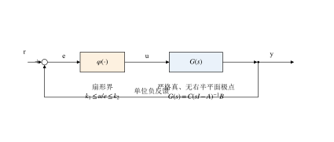
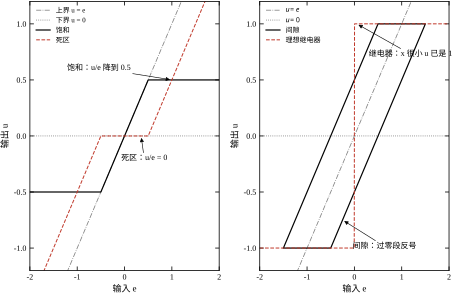
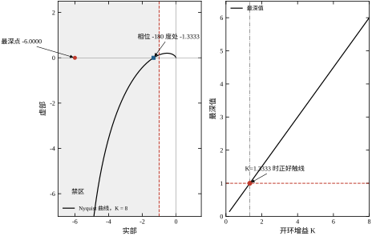
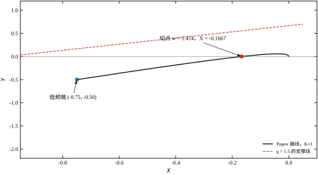
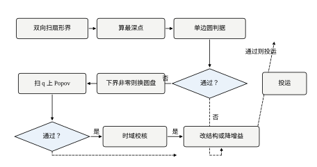
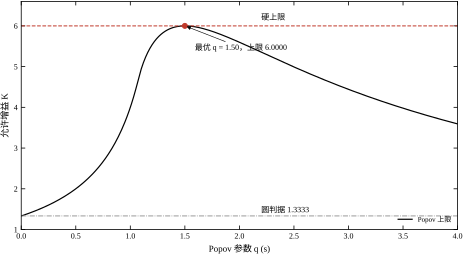
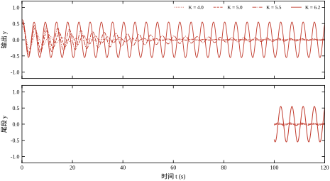
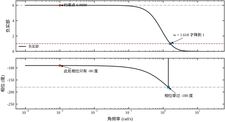
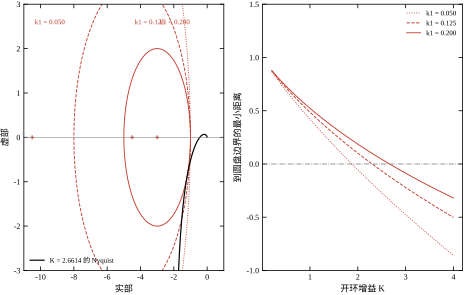
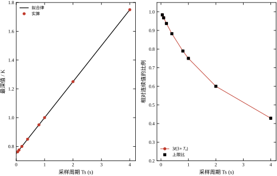

第 49 章那台恒温箱，摆幅、周期都算出来了：A^*=1.6977、\omega^*=1.4142（理想继电器、K=8），实测 1.7610 与 1.3803。数字对得上，方法就有用了。
但它回答不了一类问题。
设想一家厂有三十条同样的温控线，执行器是不同批次的电动阀，回差从 0.05 到 0.25 不等，有几台还带一点死区。采购问：“这批阀门随便装哪一台，能不能保证不振？”
描述函数回答不了。它要求你把每台阀门的 N(A) 都测出来，再逐台求交点。三十台就是三十次。更麻烦的是，N(A) 依赖激励幅值，而幅值又依赖工况——换一个负荷，交点就挪了位置。
需要的是另一种结论：不管这个非线性具体长什么样，只要它落在某个范围内，回路就绝对不振荡。 这种“对一整类非线性都成立”的稳定性叫绝对稳定性，本章的两个判据——圆判据与 Popov 判据——就是给它用的。
两章问的是不同的问题：
承诺是有代价的。要覆盖一整类非线性，就必须对其中最“坏”的那一个也成立，因此结论必然偏保守。保守不是缺陷，是这种承诺的价格。 本章一半的篇幅都在算这笔价格，以及怎样用 Popov 判据把它压下来。
先把对象固定下来。

图 50-1 里只有两个可变的东西：G(s) 的形状、以及 \varphi 所在的扇形。判据做的事情，就是把这两样东西翻译成一条不等式。回路怎么接线不在讨论范围内——这一点与第 44 章的 PID 调参、第 58 章的 MPC 都不同，那些方法要动控制器，本章只判断。**
还是主例：G(s)=K/[s(s+1)(s+2)]，前向通道串饱和放大器（斜率 1、线性区 \pm0.5），单位负反馈。
第 49 章的描述函数给出临界增益 K_c=6；时域仿真也确认：K=5.5 时末段幅值 0.0294 且还在衰减，K=6.2 时幅值 0.5501 已经稳住不降。所以真实边界就在 6 附近。
圆判据给出的上限是 K<1.3333。保守 4.5 倍——它把大量本来能用的增益判成了“不保证”。
Popov 判据给出的上限是 K<6.0000。同一个对象、同一个扇形界，只多加了一个可调参数，保守性几乎全部消失，而且给的仍然是“对一类非线性都成立”的保证，不是估计。
这一幕是本章的主线：圆判据简单、几何直观，但保守；Popov 判据多一个自由度，能把这笔保守性收回来大半。 两个判据的推导只差一个积分变换，效果却差四倍多。
绝对稳定性不谈非线性的具体形状，只谈它被夹在什么范围里。最常用的是扇形界：
k_1\le\frac{u(e)}{e}\le k_2,\qquad e\ne0 \tag{50-1}
几何上就是：把输入输出画在一张图上，整条曲线落在两条过原点的直线之间。k_1=0 时退化成单边扇形 [0,k_2]，这是最常用的一档。
参数取本书的算例，扫一遍输入看 u/x，三个环节的结果差别很大：
后两个就是本章的边界：间隙是多值的，继电器是无界的，两者都不满足式 (50-1)。第 49 章的极限环算例恰好用的是继电器——所以那一章能算、这一章不能保证，不是方法有高下，而是适用面不同。

图 50-2 把“落在扇形里”这件事画成了几何。左图的饱和与死区都在 u=0 与 u=e 两条线之间，取任何输入都不会跑出去；右图的间隙在过零段画出一个横向宽度为 2b 的回环，此时输入为正、输出仍为负，商 u/e 是负数；继电器在原点直接跳变，纵轴方向没有界。
这就是扇形界的全部含义：不是“非线性大约是什么样”，而是“它的曲线被关在哪个楔形里”。 关得住的，判据负责；关不住的，判据不管。
把扇形界 [0,k] 代进闭环，可以证明：只要 G(j\omega) 的 Nyquist 曲线不进入负实轴上 -\infty 到 -1/k 那一段，回路就绝对稳定。写成式子就是
\operatorname{Re}G(j\omega)>-\frac{1}{k},\qquad \forall\omega \tag{50-2}
几何上，这是一条竖直线把复平面切成两半，Nyquist 曲线必须整条留在右边。
回到主例。\operatorname{Re}G 的最深点在 \omega\to0：G(j\omega)\to-0.75K。K=1.2 时最深 -0.9000，离 -1 还有 0.1 的余量，判据通过；K=1.4 时是 -1.0500，越线，判据否决——尽管时域仿真显示它其实很稳。这就是 50.1.3 那个 4.5 倍的来源：约束被 \omega\to0 那一端卡死了，而那一端的相位离危险还很远。
对一般的扇形 [k_1,k_2]，禁区从一个半平面变成一个圆盘，判据改叫圆判据的广义形式，§50.2 给公式。
Popov 判据只改了一处：不再看 \operatorname{Re}G，而是看
\operatorname{Re}\big[(1+jq\omega)G(j\omega)\big]+\frac{1}{k}>0 \tag{50-3}
其中 q\ge0 是任取的一个数，取哪个由你挑。乘上 (1+jq\omega) 相当于把 Nyquist 曲线的每个点沿某个方向“拉”一下：低频段被拉得最多，高频段几乎不动。
由于 q 可以挑，判据实际上是在问：有没有一个 q，能让这条被拉过的曲线整条留在 -\frac1k 右边？ 挑得到，就绝对稳定。
主例上这个自由度非常值钱。q=0 时退化成圆判据，K 上限 1.3333；q=1.5 时上限变成 6.0000。原因在 §50.2.7 会算清：\omega\to0 那一端原来贡献 0.75，乘上权重后正好被压到 0，约束就交还给真正最紧的 \omega_x=\sqrt2 处，而那里 \operatorname{Re}G=-K/6，于是 K<6。
一句话概括三章的分工：
| 方法 | 给什么 | 保守性 | 适用对象 |
|---|---|---|---|
| 描述函数（第 49 章） | 某一个非线性的 (\omega^*,A^*) 近似值 | 不保守，但只是近似 | 已建模的具体环节 |
| 圆判据（本章） | 对整类非线性的稳定承诺 | 最保守 | 单值、扇形界内 |
| Popov 判据（本章） | 同样是对整类的承诺，但边界更紧 | 较松 | 单值、时不变、扇形界内 |
| Lyapunov 方法（第 52 章） | 具体的 Lyapunov 函数与吸引域 | 取决于构造 | 任意，但需要构造 |
圆判据买的是“简单”，Popov 买的是“不保守”，两者卖的都是一句“不管非线性长什么样”。 描述函数不卖这句话，它卖的是“如果非线性就是我测的这个，那么振在 1.38 rad/s、幅值 1.76”。
这一章的说法在文献里有三个近亲，混起来会误判适用范围。
绝对稳定性。 线性部分固定，非线性只知道“属于某个集合”，问的是“集合里的每一个成员都稳吗”。这是 Lur’e 问题的标准提法，也是本章的提法。它的结论不依赖非线性的具体形状，只依赖集合的边界。
鲁棒稳定性。 被控对象的参数在区间内变化（增益 \pm20\%、时间常数 \pm30\%），问的是“参数在这个盒子里都稳吗”。它处理的是线性不确定性，通常用 \mu 分析或区间多项式（第 66 章）。本章的 K 也是参数，但本节关心的不是 K 的散布，而是非线性的形状。
输入输出稳定性。 不问状态是否收敛，只问“输入的 L_2 范数有界时输出是否有界”，判据是小增益定理 \|G\|\cdot\|\varphi\|<1。它比绝对稳定性弱（不保证收敛到平衡点），但适用面更宽，允许时变、允许多值。
三者的差别在一个数上看得最清楚。本对象含一个积分器，|G(j\omega)| 在低频按 1/(2\omega) 发散：\omega=10^{-2} 时 |g|=50.0000，\omega=10^{-3} 时 500.0000，\omega=10^{-4} 时 5000.0000（§50.12 第十六段）。所以小增益定理要求 \sup|G|<1，在这个对象上给不出任何有限增益——它的上确界是无穷。
圆判据却能给出 1.3333。原因只有一条：它看的是实部，不是模。 实部在低频被 -0.75K 卡住，是个有限数；模被 1/(2\omega) 拖着发散。同一段曲线，一个坐标有界、一个坐标无界，判据的可解性就完全不同。这也是“圆判据是无源性判据的推广”那句话的实际含义——无源性关心的正是能量的方向，不是能量的大小。
绝对稳定性的故事值得讲两句，因为它解释了这一章为什么长成这样。
1949 年 Aizerman 提出一个很自然的猜想：如果扇形 [k_1,k_2] 内每一个线性增益 k 都使闭环稳定，那么扇形内任意非线性都使闭环稳定。这个猜想在直觉上几乎无可挑剔——非线性不过是“随幅值变的增益”，而所有可能的增益都试过了。
它错了。1950 年代到 1960 年代陆续出现反例：存在这样的系统，扇形内每个常增益都稳，但某个具体的非线性（通常是带折点的分段线性函数）能让它自振。原因是非线性不只是“变增益”，它还会在切换的瞬间“注入相位”，而相位恰恰是常增益扫描看不到的维度。
猜想被否之后，路线换成了“给充分条件”。1961 年 Popov 给出式 (50-9) 的频域判据，1962 年 Yakubovich 用 KYP 引理把它和 Lyapunov 函数接上，1966 年 Zames 用无源性（正性）定理重新叙述了圆判据。这三步之后，本章的两条判据才有了现在这个“可算、可证、可工程化”的形态。
教训有两条。第一，充分条件必然保守——它要覆盖一整类，就必须对其中最坏的成员成立；反例的存在说明“覆盖整类”这件事本身就比“逐个检验”难。第二，判据否决不等于系统不稳——它只说明这套充分条件没被满足，这正是 §50.4.5 要专门澄清的那件事。
§50.2 给两条判据的完整陈述与几何解释，§50.3 把判据拆成可执行的设计步骤，§50.4 在连续域上把主例算穿（含广义扇形与圆盘），§50.5 处理采样系统，§50.6 讨论判据给出的边界与真实边界差多少、性能代价是什么，§50.7 逐条解释 k、q、K、T_s 的作用，§50.8 给“判据不通过时怎么办”的调参经验，§50.9 讲怎么把保守性再压一压，§50.10 落到现场（扇形界怎么测、测不准怎么办），§50.11 划边界，§50.12 给可运行代码。
贯穿全章的一个数字请记住：4.5 倍。它是圆判据在主例上的保守倍数，也是本章后面所有讨论的参照——Popov 把它压到 1.0，代价是多一个要扫的参数 q。
回路写成状态空间形式：
\dot x=Ax+Bu,\qquad y=Cx,\qquad u=-\varphi(y) \tag{50-4}
G(s)=C(sI-A)^{-1}B 是线性部分，\varphi(\cdot) 是非线性环节。判据成立需要四条假设：
第三条把间隙排除在外（间隙的输出取决于历史，不是单值的），第四条把继电器排除在外。这两条不是技术细节，而是判据的适用边界，§50.10 会讲现场怎么处理这类“不合格”的环节。
回路结构就是图 50-1 那一个，往后所有推导都只用到两样东西：G(s) 的频率响应，和 \varphi 所在的那个扇形。结构不再变化，变的只是对 \varphi 的假设有多强。
式 (50-1) 是最直观的写法。它在推导里还有两种更顺手的等价形式。
乘积形式。 对单边扇形 [0,k]，式 (50-1) 等价于
u\,(u-ke)\le 0 \tag{50-5}
等号只在 u=0 或 u=ke 时成立，也就是曲线贴住两条边界的时候。
双线性形式。 对双边扇形 [k_1,k_2]，
(k_1e-u)(u-k_2e)\ge 0 \tag{50-6}
这两个式子的用处不同：乘积形式直接进 Lyapunov 函数的导数，双线性形式用来把非线性“吸收”进一个线性矩阵不等式。
数值上怎么验？ 就是 §50.1.4 那个扫描：把 e 从负到正扫一遍，算 u/e，看最小值和最大值是否落在 [k_1,k_2] 里。要注意的是扫描必须走完整的一圈——间隙只在一个方向上违反扇形界，只扫正向会漏掉（本书算例里正向扫得的 u/x 最小值是 0，反向过零段才暴露 -24）。
圆判据（[0,k] 形式） 若 \varphi 落在扇形 [0,k] 内，且
\operatorname{Re}G(j\omega)>-\frac{1}{k},\qquad \forall\omega\in\mathbb R \tag{50-7}
则闭环系统在原点全局渐近稳定。
几何上，式 (50-7) 是一条竖直线 \operatorname{Re}G=-1/k，Nyquist 曲线必须整条留在它右边。
三个极限值得记住：
对主例，\operatorname{Re}G 的最深点在 \omega\to0，值为 -0.75K。所以式 (50-7) 化成 0.75K<1/k，即 kK<4/3。k=1 时 K<1.3333——这个数字在 §50.1.3 出现过，它的来历就这么简单：整条判据被低频渐近线一处卡死。

图 50-3 左右两张图说的是同一件事。左图里 K=8 的曲线整条落在禁区左半边，最深点 -6.0000 离竖线 -1 有五个单位；右图把最深值画成 K 的函数，是一条过原点的直线 0.75K，与门限 1 交在 K=1.3333。判据的边界就是一条直线与一条水平线的交点，没有别的东西。
圆判据（[k_1,k_2] 形式） 若 0<k_1<k_2，\varphi 落在 [k_1,k_2] 内，且 Nyquist 曲线不进入圆盘
\left|G(j\omega)-c\right|>r,\qquad c=-\frac12\left(\frac{1}{k_1}+\frac{1}{k_2}\right),\quad r=\frac12\left(\frac{1}{k_1}-\frac{1}{k_2}\right) \tag{50-8}
且绕行圈数满足 Nyquist 计数要求，则闭环全局渐近稳定。
圆盘的来历可以说得很清楚：扇形界内每一个可能的“等效增益” k 都对应负实轴上一个临界点 -1/k，当 k 从 k_1 变到 k_2，这些点扫出线段 [-1/k_1,\,-1/k_2]。禁区必须覆盖整条线段，否则总有一个 k 能让曲线穿过它的临界点。把线段再“膨化”成圆盘，是因为非线性的等效增益可以带相位，禁区要在复平面上留出一圈厚度。
两个退化情形都对得上：
主例的数值：扇形 [0.2,1] 对应的圆盘圆心 -3、半径 2，即负实轴上从 -5 到 -1 的一段。K=1.2 时 Nyquist 到圆盘边界的最小距离 +0.4483，判据通过；K=2.0 时 +0.1861，仍然通过；K=4.0 时变成 -0.3197，曲线穿进圆盘，判据不成立。注意 K=2 落在圆盘外、K=1.4 却连单边扇形的竖线都过不了——双边扇形比单边更宽，判据反而更松，这两件事不矛盾。
Popov 判据 若 \varphi 单值、时不变、落在 [0,k] 内，且存在常数 q\ge0 使
\operatorname{Re}\big[(1+jq\omega)G(j\omega)\big]+\frac{1}{k}>0,\qquad\forall\omega \tag{50-9}
则闭环全局渐近稳定。
把括号展开，写成实部虚部分开的形式：
\operatorname{Re}G(j\omega)-q\omega\operatorname{Im}G(j\omega)+\frac{1}{k}>0 \tag{50-10}
和式 (50-7) 比，多出的那一项 -q\omega\operatorname{Im}G 就是全部的差别。q=0 时它消失，式 (50-10) 退回式 (50-7)——圆判据是 Popov 判据在 q=0 处的特例。
定义新坐标
X=\operatorname{Re}G(j\omega),\qquad Y=\omega\operatorname{Im}G(j\omega) \tag{50-11}
在这张 (X,Y) 图上，式 (50-10) 变成
X-qY>-\frac{1}{k} \tag{50-12}
这是一条斜率为 1/q、截距 -1/k 的直线，要求整条 Popov 曲线都在它上方。
于是判据的用法变成一次作图：把 G 的每个频率点搬到 (X,Y) 平面上，看能不能找到一条斜率为正的直线，把整条曲线托在它上面，且截距不小于 -1/k。找得到就稳定，找不到就说明这个 q 不行，换一个再试。
q 的物理含义可以这样理解：它把“频率”作为权重乘到虚部上。低频时 \omega 小、权重轻；高频时权重重。而 \operatorname{Im}G 在低频通常很大（主例 \omega=0.001 时 \operatorname{Im}G=-499.9991），乘上 \omega 后变成有限值（-0.5000）——这一步“归一化”正是 Popov 判据能修掉低频约束的原因。

看图 50-4。曲线最左端是 (-0.75,-0.50)，那块“贴着左墙下冲”的尾巴在纵轴上被压到了 -0.5，不再是无底洞。q=1.5 的斜线从左上角斜下来，切点落在 (-0.1667,\,0)，对应 \omega=\sqrt2。整条曲线只有这一点碰到线，其余都在上方，判据刚好成立。
换一个 q，斜线的斜率就变。q 太大，斜线变平，会在曲线的低频端被顶住；q 太小，斜线变陡，会在切点处被顶住。最优点就在这两种顶法之间——这就是 §50.2.7 要算的那件事。
把主例的实部虚部写全。分母记作 D=9\omega^4+\omega^2(2-\omega^2)^2，则
\operatorname{Re}G=-\frac{3K\omega^2}{D},\qquad \operatorname{Im}G=-\frac{K\omega(2-\omega^2)}{D} \tag{50-13}
代入式 (50-10) 的左端（暂不看 1/k）：
\operatorname{Re}G-q\omega\operatorname{Im}G =\frac{K\omega^2\left[q(2-\omega^2)-3\right]}{D} \tag{50-14}
现在看 \omega\to0：分子 \approx K\omega^2(2q-3)，分母 \approx4\omega^2，比值趋于
\frac{K(2q-3)}{4} \tag{50-15}
要让这一端不再是约束，只需 q\ge1.5——这就是 q=1.5 的来历。 取 q=1.5 后，式 (50-14) 的分子变成 -1.5K\omega^4，在 \omega\to0 时是四阶小量，被彻底压到零。
剩下最紧的点在哪？在 \operatorname{Im}G=0 的 \omega_x=\sqrt2 处。那里 D=36、\operatorname{Re}G=-K/6，式 (50-14) 的值是 -K/6，于是式 (50-10) 要求
-\frac{K}{6}+\frac{1}{k}>0\quad\Longrightarrow\quad K<\frac{6}{k} \tag{50-16}
k=1 时 K<6。与第 49 章描述函数给出的临界增益一模一样。
这不是巧合，也不是“Popov 判据总能达到真实边界”。它之所以在这里重合，是因为本例外两个约束（低频渐近线与 \omega_x 处）在 q=1.5 时恰好只差一点点：低频那一端被压到零，\omega_x 那一端给出 6，而真实边界也由 \omega_x 决定。换个对象，Popov 通常仍会保守一些（§50.6 会量化）。
数值上扫一遍 q 可以复核这条推导：
| q | 0 | 0.5 | 1.0 | 1.4 | 1.5 | 1.6 | 2.0 | 3.0 |
|---|---|---|---|---|---|---|---|---|
| m(q) | 0.7500 | 0.5000 | 0.2500 | 0.1676 | 0.1667 | 0.1674 | 0.1786 | 0.2251 |
| K 上限 =1/m | 1.3333 | 2.0000 | 4.0000 | 5.9649 | 6.0000 | 5.9740 | 5.5981 | 4.4415 |
其中 m(q)=\max_\omega\left(q\omega\operatorname{Im}G-\operatorname{Re}G\right)（取 K=1 计），判据要求 K\,m(q)<1。表里 q=1.5 处取到最小 m=1/6，K 上限 6.0000。曲线在 q=1.5 附近很平：q 取 1.4 或 1.6，上限只掉到 5.97，所以现场不必把 q 算得很准。
从式 (50-10) 可以直接读出：凡是 Popov 判据能判的，圆判据不一定能判；凡是圆判据能判的，Popov 一定能判（取 q=0）。所以 Popov 更强。
但强是有条件的：
两条判据都不是“频域技巧”，它们的根都在时域。圆判据对应的 Lyapunov 函数是二次型 V=x^{\mathsf T}Px；Popov 判据多一项积分：
V(x)=x^{\mathsf T}Px+2q\int_0^{y}\varphi(\sigma)\,\mathrm d\sigma \tag{50-17}
积分项在扇形界内非负（因为 \varphi 与 e 同号），所以 V 仍是正定的。q 就是这个积分项的权重——它在频域里表现为乘 (1+jq\omega)，在时域里表现为给非线性的“能量”记一笔账。
把这个 V 沿闭环轨迹求导、要求负定，经过配方与频域变换，就得到式 (50-9)。这条“时域—频域”的桥叫 KYP 引理（Kalman–Yakubovich–Popov），它把频域不等式等价成一族线性矩阵不等式的可行性。工程上这意味着：判据不通过时，可以反过来解一个 LMI 找一个更好的 Lyapunov 函数，这条路通向第 65 章。
判据保守，保守在三个地方，分清这三处才知道该往哪里使劲：
第一，扇形界宽。 把饱和、死区、间隙一起圈进 [0,1]，等于对“最坏的那个”作承诺。若实际只有一个已知的饱和，这个界就宽了。缩小扇形界是提高精度的第一手段，但需要测量（§50.10）。
第二，判据只用一个线性组合。 式 (50-7) 只看 \operatorname{Re}G，把虚部信息全丢了；式 (50-10) 多用一个 q，也只多用一个方向。频域里“整条曲线”的信息被判据压成了“一个半平面/一条直线”，丢掉的部分就是保守性。这正是 Popov 比圆判据松的原因——它多留了一个方向。
第三，要求对整类成立。 这是绝对稳定性的定义决定的，无法回避。想要更紧，只能放弃“整类”，回到描述函数那种“针对具体环节”的路子。
主例上这三条各贡献多少？可以做个分解实验：把扇形界从 [0,1] 缩到 [0.2,1]，圆判据的上限从 1.3333 涨到 2.0 以上（§50.4 给具体数）——光是收窄扇形界就拿回了一半；再让 q 自由，回到 6.0000。所以在这个例子上，“扇形界宽”和“判据只用一个方向”各占一部分，真正无法消除的保守性接近于零。
采样系统里，G 换成零阶保持下的 G_z，判据形式几乎不变：
\operatorname{Re}G_z\!\left(e^{j\theta}\right)>-\frac{1}{k},\qquad \theta\in[0,\pi] \tag{50-18}
其中 \theta=\omega T_s 是归一化数字频率。注意频率范围只有 [0,\pi]——离散系统的 Nyquist 曲线在单位圆上跑一圈，正负频率对称，看半个圆就够。
数值上，采样会把允许增益压低一点：
| T_s | 0.05 | 0.10 | 0.20 | 0.40 |
|---|---|---|---|---|
| \max(-\operatorname{Re}G_z) | 0.7625 | 0.7750 | 0.8000 | 0.8500 |
| K 上限 | 1.3115 | 1.2903 | 1.2500 | 1.1765 |
| 相对连续（1.3333） | 0.9836 | 0.9677 | 0.9375 | 0.8824 |
T_s=0.2 s 时上限降到连续值的 93.75%。这个降幅比第 49 章描述函数的降幅（同样 T_s 下频率降 6.7%、幅值升 28.9%）小得多，原因还是那句话：圆判据的约束点在低频，而采样滞后集中在高频。
广义圆判据看上去是一条新定理，其实只是单边判据做了一次坐标平移。把这件事推一遍，圆盘的公式就不用背了。
设 k_1>0，把非线性拆成“线性部分 + 余量”：
u=k_1e+u_1,\qquad u_1\in[0,\,(k_2-k_1)]e \tag{50-19}
也就是说，u_1 落在单边扇形 [0,k_2-k_1] 里。现在把 k_1e 这一项从非线性那边挪到线性部分：由 y=G u、e=r-y 得
y=G\left(k_1(r-y)+u_1\right)\ \Longrightarrow\ y=\frac{G}{1+k_1G}\left(k_1r+u_1\right) \tag{50-20}
括号里的 k_1r 只是参考输入的缩放，不影响稳定性。于是原问题等价于一个新回路：线性部分是
G_1=\frac{G}{1+k_1G} \tag{50-21}
非线性是 u_1，扇形界 [0,k_2-k_1]。对它用单边圆判据：
\operatorname{Re}\frac{G}{1+k_1G}>-\frac{1}{k_2-k_1} \tag{50-22}
剩下的全是代数。记 G=X+jY，有
\operatorname{Re}\frac{G}{1+k_1G}=\frac{X+k_1|G|^2}{\left|1+k_1G\right|^2} \tag{50-23}
把式 (50-23) 代进式 (50-22)，两边乘正数 (k_2-k_1)|1+k_1G|^2，展开 |1+k_1G|^2=1+2k_1X+k_1^2|G|^2，整理得
k_1k_2|G|^2+(k_1+k_2)X+1>0 \tag{50-24}
两边除以 k_1k_2 再配方：
\left|G+\frac12\left(\frac{1}{k_1}+\frac{1}{k_2}\right)\right|^2> \left[\frac12\left(\frac{1}{k_1}-\frac{1}{k_2}\right)\right]^2 \tag{50-25}
这正是式 (50-8)：圆心在负实轴 -c、半径 r 的圆盘，曲线必须留在盘外。
这条推导顺带解释了三个退化情形为什么对得上。k_1\to0 时 G_1\to G、扇形右端 k_2 不变，式 (50-22) 退回 \operatorname{Re}G>-1/k_2，圆盘张开成半平面。k_1=k_2 时扇形宽度为零，u_1\equiv0，式 (50-22) 右端趋于 -\infty，条件自动满足，圆盘缩成一点 -1/k_2。所以“圆盘”不是新东西，是“先减掉一个已知的线性增益，再对余量用竖线判据”这一招的几何结果。
工程上这条变换还有一个用处：它告诉你为什么下界 k_1 能提高上限。减掉 k_1e 之后，回路里剩下的是一个“更小”的非线性（宽度只有 k_2-k_1），而线性部分被反馈“硬化”成 G/(1+k_1G)——多了 k_1 这条局部反馈，低频增益被压住，曲线最左那一竖就往右移。§50.3.4 表 50-3 里 [0.2,1] 给出 2.6614 而不是 1.3333，原因就在这里。
把 Popov 条件写成更一般的形式：
\operatorname{Re}\left[\Pi(j\omega)G(j\omega)\right]+\frac{1}{k}>0,\qquad \forall\omega \tag{50-26}
\Pi 叫乘子。只要 \Pi 是正实的（\operatorname{Re}\Pi(j\omega)\ge0 对所有 \omega 成立），式 (50-26) 就是一条可用的绝对稳定性条件（Zames 的乘子定理）。\Pi=1 是圆判据，\Pi=1+jq\omega 是 Popov 判据。
乘子在这里的作用，说白了就是给不同频段的“证据”加权。低频段的 \operatorname{Im}G 很大但不可靠——那一段的回路增益极高，任何微小扰动都会被积分器慢慢吃掉，与振荡无关；高频段离穿越点太远，也不该主导结论。乘子把这些频段的权重压低，让判据去听“真正危险的那一段”的话。
为什么选 1+jq\omega 而不选更复杂的？三个理由。
它是最小的正实族。 实部恒等于 1，天然满足正实性，不需要额外约束；只有一个参数 q，扫描成本可以忽略。想再多一个自由度，就得用分式 \Pi=(1+jq_1\omega)/(1+jq_2\omega)，而分母的正实性要求 q_1\ge q_2，这个约束会削弱它在关键频率上的作用（§50.9.4 算过，见式 (50-35)）。
它的虚部随频率线性增长，正好抵消低频的大虚部。 \operatorname{Im}G 在低频按 -K/(2\omega) 发散，乘上 q\omega 之后变成常数 -qK/2 ——发散被吃掉了，但只剩一个常数，还不至于把中频段的信息一起抹平。
它的参数有物理量纲。 q 的量纲是秒，1.5 s 与对象极点的时间常数 1 s、2 s 同量级。这不是巧合：乘子做的事情相当于在回路里插入一个时间尺度为 q 的微分环节，它必须与被控对象的时间尺度可比，否则等于在错误的频段加权。
所以乘子不是数学装饰，它是“你相信哪个频段”的定量表达。q=0 是不加权的圆判据，q=1.5 是“主要相信中频、对低频打折”的 Popov 判据，q\to\infty 是“完全不信低频”。主例的最优解落在 q=1.5，说明这个对象真正危险的频段就在穿越点附近。
§50.2.1 的四条假设不是形式要求，每一条都对应一类会失效的对象。
严格真（D=0）。 若 D\ne0，高频段 G(j\omega)\to D，Nyquist 曲线收于实轴上一点而不是原点，判据的绕数计数要改。实际对象都有带宽限制，高频增益总会掉下去，这一条在工程上自动满足；但在建模时把执行器的瞬时增益直接写进 G 就会违反它。
无右半平面极点。 这是最容易被忽略的一条。若 G 有不稳定极点，围绕右半平面的围线要绕开它，绕数条件的符号随之改变，判据的形式要换成“允许绕数”的版本。更根本的是，不稳定对象本来就会自己发散，饱和只能把它“限制”成一个极限环，谈不上渐近稳定。这类对象要靠第 52 章的吸引域分析，或者先用内环把它稳住。
单值。 间隙违反这一条（图 50-2 右图的回环）。工程上有两种处理：一是按第 49 章用描述函数单独算；二是把回环“包”进一个更大的扇形，用包住它的单值凸包来近似。后者给出的界必然更宽，因为它把“有记忆”这件事丢掉了一半信息。
过原点。 若 \varphi(0)\ne0（带偏置的阀门、有死区的执行器在零位附近），零点是平衡点这一条就不成立，闭环会出现稳态误差，甚至绕着非零工作点转圈。处理办法是把偏置换算成常值扰动，判据只对“增量”成立——这也是为什么现场标定时总要先做零位校准。
这四条之外还有一条隐含前提，经常被漏掉：线性部分要是时不变的。 判据的证明用到了 G(j\omega) 这个概念，而它只对定常系统有定义。参数随时间漂移的对象，只能按最坏情况定界（§50.10.4），或者用时变版本的理论。
式 (50-26) 要求乘子 \Pi 正实。这条要求看着抽象，其实只做了一件事：不允许乘子把任何频点的相位拧过 90^\circ。
把乘积拆开看：
\operatorname{Re}[\Pi G]=\operatorname{Re}\Pi\cdot\operatorname{Re}G-\operatorname{Im}\Pi\cdot\operatorname{Im}G
正实意味着 \operatorname{Re}\Pi\ge0，等价于 |\arg\Pi|\le90^\circ。在复平面上，乘一个正实数不改变方向，乘一个相位因子最多把向量转 90^\circ。转过 90^\circ 以内，右半平面的点转不到左半平面去——这就是正实乘子不会凭空造出稳定性的几何原因：它能重新分配权重，不能改写“点在哪个半平面”。
具体到 \Pi=1+jq\omega：\operatorname{Re}\Pi\equiv1，\operatorname{Im}\Pi=q\omega。在 Nyquist 平面上它是一条随频率上升的竖直直线；乘上 G 之后，每个频点的向量被拉长 \sqrt{1+q^2\omega^2} 倍、转动 \arctan(q\omega)。低频 q\omega\ll1 几乎不动，高频 q\omega\gg1 转过接近 90^\circ——这就是“只信中频”的几何版本，与 §50.2.13 的说法同源。
反过来看就更清楚：若允许 \Pi 在某频点把向量转 180^\circ，那么 -1 可以被“转”到曲线另一侧，判据就会给出假的稳定性。所以正实性不是技术性假设，而是乘子法的合法性来源。这也解释了 §50.9.3 那个反直觉结果：二阶乘子的分母一旦让 \operatorname{Re}\Pi 在 \sqrt2 附近变小，正实性就从“恒等于 1”退化成“在某些频点接近 0”，判据的可用信息随之被抽掉，界自然掉下来。
判据在纸上是两行不等式，落到一台具体设备上要拆成六步。表 50-1 是清单。
表 50-1 圆判据/Popov 判据的六步流程与主例结果
| 步 | 动作 | 用到的式子 | 主例结果 |
|---|---|---|---|
| 1 | 双向扫 u/e，定扇形界 | 式 (50-27) | 饱和（\lvert e\rvert\le4）→ [0.125,1] |
| 2 | 求 \max(-\operatorname{Re}G) 及其频率 | — | K=8 时 6.0000 |
| 3 | 代入单边圆判据出 K 上限 | 式 (50-28) | 1.3333 |
| 4 | 下界不为零则换圆盘，补绕数条件 | 式 (50-29) | [0.2,1] 给 2.6614 |
| 5 | 低频卡死就扫 q 用 Popov | 式 (50-30) | q^*=1.50，6.0000 |
| 6 | 时域校核，记录末段幅值与衰减比 | 仿真 | 八个增益八行判定 |
顺序不能乱。第 1 步错了后面全废，§50.3.6 给一个具体例子；第 3、4、5 步是逐级放宽，走到第 5 步才通过，就说明前两步的保守性有多大；第 6 步不属于判据，但必须做——不做就不知道自己为这句承诺付了多少钱。

图 50-5 里有两处容易走错的分支。第一处是“单边圆判据通过？”——不通过时不要直接降增益，先看下界是否非零（能换圆盘），再试 Popov。第二处是“Popov 通过？”——不通过才轮到改结构。左边那条回到“扫 q”的虚线不是循环，是“换一个 q 再试一次”；图纸上画成环，是因为 q 的扫描本身就是一个循环。
先把环节单独拿出来，扫输入、记输出，取商的确界：
k_2=\sup_{e\ne0}\frac{u(e)}{e},\qquad k_1=\inf_{e\ne0}\frac{u(e)}{e} \tag{50-27}
两个操作细节决定这一步的成败。
必须双向扫。 §50.1.4 里间隙那个 -24.0000 是从负向行程回扫时才露出来的：过零段输出还停在负值、输入已经翻正，商就冲到很大负值。只从零开始正向扫，得到的下界是 +0.0000，看起来“间隙也在 [0,1] 里”，结论完全反了。带记忆的环节一定要走完一个完整往复。
饱和的下界取决于工作幅值，不是一个常数。 斜率 1、线性区 \pm0.5 的饱和，输入幅值 2 时最低商是 0.5/2=0.25，幅值 4 时是 0.125，幅值 8 时是 0.0625。e\to\infty 时下界趋于零，所以严格说饱和的扇形界永远是 [0,1]。想要一个正的下界，就得先声明“误差不会超过多少”——这是一条关于工况的假设，不是关于环节的测量。
这一步的输出不是两个数，而是两个数加一条适用条件。后面 §50.4 会看到，把 [0,1] 换成 [0.125,1] 能让上限从 1.3333 涨到 2.2988，代价就是那条“\lvert e\rvert\le4”的承诺。
把 G(j\omega) 扫一遍，取实部的最小值，代入
k\le\frac{1}{\max\limits_{\omega}\left(-\operatorname{Re}G(j\omega)\right)} \tag{50-28}
主例五档增益的结果见表 50-2。
表 50-2 单边圆判据的增益扫描（G=K/[s(s+1)(s+2)]）
| K | \max(-\operatorname{Re}G) | k 上限 | K\cdot\max(-\operatorname{Re}G) |
|---|---|---|---|
| 1.2 | 0.9000 | 1.1111 | 1.0800 |
| 2.0 | 1.5000 | 0.6667 | 3.0000 |
| 4.0 | 3.0000 | 0.3333 | 12.0000 |
| 6.0 | 4.5000 | 0.2222 | 27.0000 |
| 8.0 | 6.0000 | 0.1667 | 48.0000 |
表 50-2 有两个地方容易读错。
第三列不是常数，第四列也不是。判据要求的是 \max(-\operatorname{Re}G)<1/k，而对本例 \max(-\operatorname{Re}G)=0.75K，两边相乘得 kK<4/3——常数是乘积 kK，不是任何一列本身。第四列除以 K 才是那个 4/3：1.0800/1.2=0.9，48.0000/8=6，都不是 4/3。第四列真正的含义是 0.75K^2，它按增益的平方长。
第四列按 K^2 长，但判据用的不是它。判据约束的是 \max(-\operatorname{Re}G)<1/k，即 0.75K<1/k——被约束的量线性于 K。K=2 时深度 1.5、越界 0.5；K=8 时深度 6.0、越界 5.0。K 涨四倍，越界量涨十倍。所以圆判据对高增益回路格外苛刻，不是它算错了，是 0.75K 这一项本身就随增益直线上升。
最深点的位置也值得记一笔：它永远在 \omega\to0 那一头，G(j\omega)\to-0.75K。K=8 时是 -6.0000，而真正相位到 -180^\circ 的 \omega=\sqrt2 处只有 -1.3333。判据是被一个相位才 -90^\circ、离危险还差得远的地方否决的。§50.4.2 专门解剖这件事。
若扇形是 [k_1,k_2] 且 k_1>0，禁区从一个半平面缩成一个圆盘：圆心 c=-\frac12(1/k_1+1/k_2)、半径 r=\frac12(1/k_1-1/k_2)，判据是
\left|G(j\omega)-c\right|>r,\qquad\forall\omega \tag{50-29}
另外还要一条绕数条件：G 的 Nyquist 曲线不能把点 -1/k_1 圈在里面。对本例，这条条件化成 0.75K<1/k_1，即 K<4/(3k_1)。两条都要满足，取小的那个。
表 50-3 是 k_2=1、下界逐档抬高的结果。
表 50-3 广义圆判据的边界随扇形下界的变化（k_2=1）
| k_1 | 圆心 c | 半径 r | 不进圆盘的上限 | 绕数条件 4/(3k_1) | 综合上限 |
|---|---|---|---|---|---|
| 0.05 | -10.5 | 9.5 | 1.8763 | 26.6667 | 1.8763 |
| 0.10 | -5.5 | 4.5 | 2.1683 | 13.3333 | 2.1683 |
| 0.125 | -4.5 | 3.5 | 2.2988 | 10.6667 | 2.2988 |
| 0.20 | -3.0 | 2.0 | 2.6614 | 6.6667 | 2.6614 |
| 0.50 | -1.5 | 0.5 | 不触发 | 2.6667 | 2.6667 |
表 50-3 的最后一行说明两条约束会换班。下界小时圆盘大、右边界压到 -1 附近，约束来自“曲线进不进圆盘”；下界大时圆盘小而且靠左，曲线根本碰不到它，这时约束改由绕数条件承担，上限按 4/(3k_1) 走。工程含义很直接：收窄扇形界的收益是有上限的，收得再窄也换不来无穷大的增益余量。
前三步都卡在 \omega\to0，那就换 Popov。定义
m(q)=\max_{\omega\ge0}\left[q\omega\operatorname{Im}G(j\omega)-\operatorname{Re}G(j\omega)\right],\qquad k\le\frac{1}{\min\limits_{q\ge0}m(q)} \tag{50-30}
q 从 0 扫到 3，主例的最优点在 q^*=1.50，m=0.1667，上限 6.0000。q=0 时 m=0.7500，上限退化成 1.3333——正好是第四步之前的数，说明 q=0 就是圆判据。
q 在 1.5 附近很平：1.48 与 1.52 都给出 5.9988，只差 0.0012。所以实际设计时不必精调，取 1.5 附近任何值都一样。这个“平台”不是巧合，§50.2.7 已经算过：q>1.5 后低频项变成四阶小量，约束完全交给 \omega_x=\sqrt2；q<1.5 时低频项还在，仍是它卡着。平台就是两段约束的交界。

图 50-6 的形状值得记住：左边陡、右边缓、顶上平。左边陡是因为 q<1.5 时低频约束还在，q 稍减，m(q) 就按 0.75-0.5q 线性上升；右边缓是因为超过 1.5 之后低频不再起作用，q 继续加大只会让中高频被过度加权，上限慢慢往下掉（q=3 时还有 4.4415）。顶上那条 6.0000 的水平线不是画着好看，它是 §50.9.2 要证明的硬上限——曲线碰到它就不可能再往上走。
判据只给“是/否”，不给波形。所以最后一定要跑一遍时域，看末段幅值和衰减比。主例饱和（a=0.5）的八个增益见表 50-4。
表 50-4 时域校核（饱和 k=1、a=0.5，T=120 s，末 40 s 统计）
| K | 末段幅值 | 后/前 20 s 幅值比 | 频率 | 判定 |
|---|---|---|---|---|
| 1.2 | 0.0000 | — | — | 收敛 |
| 1.4 | 0.0000 | — | — | 收敛 |
| 2.0 | 0.0000 | — | — | 收敛 |
| 4.0 | 0.0000 | 0.153 | 1.2364 | 收敛 |
| 5.0 | 0.0014 | 0.356 | 1.3193 | 收敛 |
| 5.5 | 0.0294 | 0.617 | 1.3654 | 衰减 |
| 6.2 | 0.5501 | 1.000 | 1.4139 | 自振 |
| 8.0 | 0.7946 | 1.000 | 1.4067 | 自振 |
前三行的幅值恒为零，比值无定义，所以填“—”。判定用的是两道门：末段幅值低于 2\times10^{-3} 记“收敛”，否则看后 20 s 与前 20 s 的幅值比，大于 0.98 记“自振”，其余记“衰减”。
注意 5.0 与 5.5 的分别。两行的比值 0.356 与 0.617 都小于 1，都还在衰减，只是 5.0 已经落到门限以下，5.5 还悬在 0.03 上下慢慢往下掉。真实边界在 5.5 与 6.2 之间，靠近边界时衰减变得极慢——这是分岔附近的常态，也是时域校核不能只跑 20 s 的原因。
表 50-4 与判据的对照一眼就能看出代价：判据只批到 1.3333，实测到 5.5 还在衰减，K=4 时幅值早就归零。判据否决的区间里有大段其实是稳的，这就是 §50.1.3 那个 4.5 倍。

图 50-7 的下半张是全章最有说服力的一张图。K=4.0 与 5.0 的尾段已经平了，K=5.5 还在缓慢衰减（图上能看到幅度一点点缩），K=6.2 已经完全进入等幅振荡。四条曲线的差别只在“尾段是否还在缩”，而判据的边界 1.3333 比图里最小的 4.0 还低，根本不在画幅之内。 这就是“保守”在波形上的样子。
这一步之外还有三个常见坑：
把六步在一个具体工作点上走完，看清每一步的输出长什么样。
已知：对象 G(s)=K/[s(s+1)(s+2)]，K=8；执行器是电动阀，实测饱和点 \pm0.5、线性段斜率 1；要求回答“这个增益能不能保证不振”。
第 1 步。双向扫 u/e，正向从 0 到 4 得 [0.1250,1.0000]，反向从 0 到 -4 得同样的区间（饱和是单值的，两个方向一致）。若再把工况声明为“误差不超过 4”，下界就能写成 0.125；不声明就只能写 0。
第 2 步。扫频得 \max(-\operatorname{Re}G)=6.0000，位置在 \omega\to0。这个数等于 0.75\times8，与解析式对得上。
第 3 步。单边圆判据给出 K<1.3333。工作点 8 远超，缺口 \Delta=6.0000-1=5.0000。不通过。
第 4 步。扇形 [0.125,1] 对应圆盘圆心 -4.5、半径 3.5，上限 2.2988；绕数条件给 4/(3\times0.125)=10.6667，不卡。综合上限 2.2988，仍然远小于 8。不通过。
第 5 步。扫 q 得 q^*=1.50、上限 6.0000。这是这个对象的硬上限（§50.9.2），所以无论怎么调 q 都过不了。到这一步应当停止优化判据，转去改结构或降增益。
第 6 步。时域仿真：K=8 时末段幅值 0.7946、幅值比 1.000、频率 1.4067，确认自振。判据的否决与实测一致——这一次判据没有保守，它说对了。
把工作点换成 K=2，过程会不一样，也更能说明“为什么要走到第 5 步”。
第 3 步仍然不通过（2>1.3333），第 4 步用 [0.2,1] 给出 2.6614，通过，但这条结论依赖“|e|\le2.5”这个工况假设；第 5 步在完全不加假设的条件下给 6.0000，同样通过。同一个工作点，第 4 步的通过是“有条件的通过”，第 5 步的通过是无条件的。 现场该采信哪一个，取决于你敢不敢对误差范围作承诺（§50.8.3）。
这个算例还说明一件事：判据的输出不是一个数，而是一个数加一句话。“K<2.6614（在 |e|\le2.5 内）”与“K<6.0000”是两条不同性质的结论，写进设计文档时不能只抄数字。
判据的结论全部来自“扫频取极值”，图画得对不对直接决定结论对不对。三条作图规矩。
频率网格必须是对数的，而且起点要低。 本例的最深点在 \omega\to0，若网格从 \omega=0.01 起，读到的最深值是 -5.9993（表 50-5），比真值 -6.0000 少 0.0007；从 \omega=0.1 起就只有 -5.9258，少 0.07。这个误差在本例上无关紧要，但对含双积分器或含纯滞后的对象，低频段漏点会直接把上限抬高一大截。本章代码统一用 10^{-4}\sim10^{3}、40001 点。
Popov 图的纵轴是 \omega\operatorname{Im}G，低频段要单独看一眼。 原始虚部在低频是无界的，变换后才收敛到 -0.5（图 50-4 的左端点）。若网格起点不够低，这个端点根本画不出来，你会误以为曲线从某个有限值开始，“整条曲线在直线上方”的判断就可能出错。
圆盘图的横轴要留够左边。 扇形下界取得小的时候，圆心会跑到很左边：k_1=0.05 时圆心 -10.5、半径 9.5，圆盘左边缘到 -20。图 50-9 的横轴放到 -11，只画了圆盘的一部分，原因是本书关心的是圆盘右侧边界（它落在 -1 附近），而不是整张圆。作图时要先想清楚“判据的约束点在哪一侧”，再定坐标范围。
三张图画完，还要做一次交叉检查：图上的约束点频率，应当与解析值对得上。 本例的圆判据约束点在 \omega\to0（解析 0），圆盘的约束点在 0.54\sim1.03（解析 \sqrt2 附近），Popov 的切点在 1.414（解析 \sqrt2）。三个数都对上，图才算画对。
主例的六步能走得这么顺，是因为 \max(-\operatorname{Re}G)=0.75K 和 -K/6 都有解析式。换一个对象，这两条式子就没了，六步要改成数值版。
数值版只有三个动作。
动作一，扫频取最深点。 网格覆盖 10^{-4}\sim10^{3}，两头都要够远：低频不够低会漏掉竖直尾巴（\omega=0.01 起只能读到 -5.9993，少 0.0007），高频不够高则会把曲线截断在还没衰减完的地方。
动作二，二分求边界。 把“判据是否通过”写成一个返回布尔值的函数，再对 K 二分 80 次。单边判据的边界就是 K=1/[k\max(-\operatorname{Re}G)]，可以一步算出；圆盘与 Popov 的边界没有闭式，只能二分。
动作三，检查前提。 扫频之前先确认 G 严格真、开环无右半平面极点。有 RHP 极点时绕数条件要重算，判据形式也变；这不是数值细节，是能不能用的问题。
伪代码不过十行：
def kmax(Gfun, k, wg):
m = max(-Gfun(w).real for w in wg) # 最深点
return 1.0 / (k * m) # 单边判据边界
def passes(Gfun, K, k, wg):
return max(-Gfun(K, w).real for w in wg) < 1.0 / k两个容易踩的坑。第一，含纯滞后的对象，G(j\omega) 带 e^{-j\omega\tau}，曲线会一圈圈往里螺旋，网格必须密到“每圈至少几十个点”，否则最深点会被跳过。第二，若对象相对阶为 1 或 2，高频相位到不了 -180^\circ，曲线可能根本不穿负实轴——这时圆判据给出的界会非常大，不要误以为“判据很宽松”，实际上是没有约束点。
通用版比解析版慢，但六步的逻辑一字不改：定界、算最深点、判、不够就换圆盘、还不够就上 Popov、最后时域校核。 变的只是每一步用解析式还是用数值，不变的是每一步在回答什么问题。
§50.3.4 的圆盘要用下界 k_1，§50.3.5 的 Popov 只要上界 k_2。这个差别决定了尝试顺序。
先试 Popov，理由是它不要新信息。 扫 q 只是在已有数据上加一维搜索，不引入任何新假设；饱和、死区这类环节的上界 k_2 本来就要测，下界 k_1 却往往测不出来——偏置会让“过原点”这一条先失效（§50.10.2）。所以 Popov 是“免费的一档”，先做。
再试圆盘，理由是它买的是另一类信息。 主例上 [0,1] 的圆判据给 1.3333，Popov 给 6.0000；而 [0.2,1] 的圆盘只给 2.6614——圆盘不但没超过 Popov，还差得远。 这说明两者不是“谁更精细”的关系，而是吃的东西不同：Popov 用虚部形状，圆盘用下界位置。
那么圆盘在什么场合才值得花那份测量成本？三个条件要同时成立：q 扫描在最优点附近很平（说明瓶颈不在虚部，加权已经用尽）；现场确实能测出可靠的下界，且验收时有办法保证工况不越界；下界与上界之比足够大（主例 0.2 换来的收益接近一倍，0.5 就几乎为零）。反过来，若 q^* 处的平台很尖，说明 \omega\operatorname{Im}G 正好抵消了最深点，这时圆盘最多补回低频尾巴，收益有限。
还有一个容易被忽略的顺序问题：两个界不能组合。 本章的判据都是“单独用”的形式，把圆盘变换与 Popov 乘子接在一起（广义 Popov）当然存在，但那时回路已经被改成 G/(1+k_1G)，q 的最优值必须在新回路上重扫，旧结果直接套会错。工程上稳妥的做法是：先把该改的结构改完，再在新回路上完整重跑六步，而不是把两个上限相乘或相加。判据给的界不能拼装，只能重算。
先看清对象。G(s)=8/[s(s+1)(s+2)]，逐点算出来如表 50-5。
表 50-5 K=8 时 Nyquist 曲线的关键点
| \omega | \operatorname{Re}G | \operatorname{Im}G | \operatorname{Re}G+1 |
|---|---|---|---|
| 0.0001 | -6.0000 | -39999.9993 | -5.0000 |
| 0.001 | -5.9999 | -3999.9930 | -4.9999 |
| 0.01 | -5.9993 | -399.9300 | -4.9993 |
| 0.1 | -5.9258 | -39.3077 | -4.9258 |
| 0.5 | -4.5176 | -5.2706 | -3.5176 |
| 1.0 | -2.4000 | -0.8000 | -1.4000 |
| 1.4142 | -1.3333 | 0.0000 | -0.3333 |
| 2.0 | -0.6000 | 0.2000 | +0.4000 |
| 3.0 | -0.1846 | 0.1436 | +0.8154 |
| 10.0 | -0.0023 | 0.0075 | +0.9977 |
三件事从表里直接读出来。
实部单调递增。从 -6.0000 一路爬到 0，中间不回头。这意味着“最深处”就是起点，扫频不用找，解析就能定：\omega\to0 时 G\to-0.75K。
虚部在 \omega=\sqrt2 处过零，那一点实部 -1.3333，正好是 -K/6。相位到 -180^\circ，线性系统的临界点就在这里——如果非线性退化成纯增益，K=6 时该点正好落在 -1。
低频段极其陡。\omega 从 0.1 降到 0.0001，实部只从 -5.9258 挪到 -6.0000，虚部却从 -39 掉到 -40000。曲线几乎是竖直往下冲，而它冲下去的位置离 -1 有五个单位远。这是一条“贴着左墙往下掉”的曲线，它危险的地方不在这条尾巴上。
把式 (50-28) 代进本例：0.75K<1/k，k=1 时 K<4/3=1.3333。这个数怎么来的，一句话：曲线最左那一竖的横坐标被要求大于 -1。
但表 50-5 显示，曲线最左那一竖的横坐标是 -0.75K，它出现在 \omega\to0、虚部已经到 -40000 的地方。这个点真的会引发不稳定吗？不会。低频大虚部意味着这一段的回路增益极高、相位滞后近 90^\circ，任何扰动都会被积分器慢慢吃掉，跟振荡无关。判据却把它当成了约束点。
问题出在式 (50-2) 的形式。它要求整条曲线在竖线右侧，不区分曲线在哪一段、也不看虚部。用一个半平面去套一条竖直下冲的曲线，最左那一竖自然就成了瓶颈。这不是判据写错了，是它主动放弃了两样信息：虚部、以及“哪一段频率真正危险”。
被放弃的这部分值多少？看两个数：\omega\to0 处 -6.0000，\omega=\sqrt2 处 -1.3333。若只按后者约束，K 能到 6；按前者只能到 1.3333。差额 4.5 倍，全部产生在 \omega<1 的低频段，而低频段恰恰是回路最安全的地方。

图 50-8 把这件事画在同一张纸上。上图纵轴是 -\operatorname{Re}G，横轴是对数频率；曲线从 \omega\to0 的 6.0000 单调下降，在 \omega\approx1.62 处才降到门限 1/k=1，之后继续趋零。下图纵轴是相位，它从 \omega\to0 的 -90^\circ 单调下降，在 \omega=\sqrt2 处正好穿过 -180^\circ。
两张图对照着读，保守性的来源一目了然。判据的约束点是上图圆点那个 6.0000，它对应的相位只有 -90^\circ，离能引发振荡的 -180^\circ 差着整整九十度；而相位真正到 -180^\circ 的地方，负实部只有 1.3333。 换句话说，越界最厉害的那一段恰恰最安全。单边判据把“实部大小”当成唯一的危险指标，不看这一段离 -180^\circ 有多远，保守性就出在这里。图里的小方块标出两个特征频率：负实部降到 1 的 1.62，和相位穿越的 \sqrt2=1.414——两者只差 15%，说明“实部够不够小”与“相位够不够坏”在本例中几乎同时发生，判据卡住的不是这一段。
顺带说一句读表的事：\max(-\operatorname{Re}G)=0.75K 线性于 K，所以“越界多少”（0.75K-1）也线性于 K；而表 50-2 第四列那个“增益乘深度”按 K^2 长。两者不是同一个东西，别混着用。
广义圆判据换掉了半平面。以 [0.2,1] 为例，圆心 -3、半径 2，禁区是一个有界圆盘，最右点正好落在 -1。
表 50-5 里那条贴着左墙下冲的尾巴，从圆盘旁边溜过去了：\omega\to0 时曲线在 (-0.75K,-\infty)，实部虽然远小于 -2，虚部却是无穷大，离圆盘十万八千里。圆盘只关心 -5 到 -1 那一小片区域，曲线在那儿经过时虚部只有 -0.7 到 -0.9，这才是有意义的位置。
临界频率因此从中频冒出来。K=1.2 时曲线离圆盘最近的点在 \omega=0.5411，K=2.0 时在 0.6356，K=2.6 时在 0.6924，K=8.0 时在 1.0290——全部落在 0.54\sim1.03 之间，紧挨着 \omega_x=\sqrt2。圆盘判据的约束点回到了相位 -180^\circ 附近，这才是它比单边判据紧的原因。
边界也随之抬高。表 50-3 给出 [0.2,1] 的综合上限 2.6614，比 [0,1] 的 1.3333 高出一倍。用 §50.3.6 的时域数据交叉验证：K=2.0 时末段幅值 0.0000，确实稳；K=4.0 时也稳，但判据已经否决——还剩 1.5 倍的保守。
不过圆盘也不是万能的。表 50-3 最后一行说明：下界一旦抬到 0.5，圆盘缩成圆心 -1.5、半径 0.5 的小圆，曲线根本碰不到它，约束改由绕数条件 K<4/3k_1=2.6667 承担。绕数条件还是那条低频尾巴——0.75K 不能越过圆盘最左点 -1/k_1。半平面丢掉的低频信息，圆盘只捡回来一部分。

图 50-9 左边画了三个圆盘，k_2=1 不变、k_1 取 0.05、0.125、0.2。三个圆的右边缘都落在 -1——这是广义圆判据的必然结果，因为 c+r=-1/k_2=-1，与 k_1 无关。变化的是左边：k_1=0.2 时圆心 -3、半径 2，最左到 -5；k_1=0.125 时圆心 -4.5、半径 3.5，最左到 -8；k_1=0.05 时圆心 -10.5、半径 9.5，最左到 -20。k_1 每减一半，圆盘直径就翻一倍多。
曲线画的是 K=2.6614，正好是 k_1=0.2 的边界增益。它在 \omega=\sqrt2 附近与最小的那个圆相切，却离另外两个圆还远。右图把这件事换成“距离—增益”曲线：三条线各自在某处穿过零轴，横轴截距分别是 1.8763、2.2988、2.6614，与表 50-3 的上限逐一对应。注意截距的走向与圆盘大小相反——圆盘越大，截距越靠左。 原因在右端：大圆盘把低频那条尾巴也圈了进去，曲线更早碰到边界。
这也解释了表 50-3 里那个反直觉的现象：把下界从 0 抬到 0.2，上限从 1.3333 涨到 2.6614；继续抬到 0.5，上限只挪到 2.6667，几乎不动；再往上就一路下滑，k_1=1 时又回到 1.3333。抬下界的收益在 k_1\approx0.2 附近就用尽了，之后约束换了班，天花板变成绕数条件的 4/(3k_1)。 换句话说，圆盘判据能捡回的低频信息是有配额的，配额来自“下界与上界的比值”，而不是下界本身。
同一个对象、同一个 k_2=1、同一批时域数据，三种说法给出三个上限：
\text{圆判据 }[0,1]:\ 1.3333;\qquad \text{圆盘 }[0.2,1]:\ 2.6614;\qquad \text{Popov }[0,1]:\ 6.0000
三条都成立，都保证“这一整类非线性不振”，区别只在扇形界和所用信息量。真实的时域边界介于 5.5 与 6.2 之间，Popov 的 6.0000 几乎压在它身上。
值得注意的是 Popov 用的还是 [0,1]——扇形界一点没动，光靠一个 q 就把 4.5 倍收了回来。这说明主要的保守性来源不是“扇形太宽”，而是“只用一个方向”。§50.2.10 列的三条来源里，第二条在这里占了绝大部分。
表 50-4 里 K=1.4 是被圆判据挡在门外的（0.75\times1.4=1.05>1），时域却给出幅值 0.0000、稳得干干净净。有人看到这儿会怀疑判据的价值。
先把话说准：K=1.4 对 [0,1] 内的任意非线性确实都是稳的，这不是猜测——§50.4.4 的 Popov 判据已经把它证出来了（上限 6.0000）。所以圆判据这次不是“算错了”，而是“证不出来”。
两句话的区别在这里：
所以“判据否决但实测稳”完全正常，它衡量的正是保守性。真正的错误用法是反过来的那种：判据通过就以为万事大吉，忘了它只覆盖扇形界内的非线性——间隙、继电器都在界外，判据通过也不代表它们不振。§50.10 会把这条边界讲透。
G(s)=K/[s(s+1)(s+2)] 里 K 只是一个乘数，所以
G(K,j\omega)=K\cdot g(j\omega),\qquad g(j\omega)=\frac{1}{j\omega(j\omega+1)(j\omega+2)}
K=8 的 Nyquist 曲线，就是 K=1 那条曲线以原点为中心放大八倍。三条结论随之而来。
第一，形状不变，相位不变。相位只由分母的零点位置决定，与 K 无关。所以 \omega=\sqrt2 永远是相位 -180^\circ 的点，K 从 1 变到 8，这个频率一动不动。
第二，实部按比例缩放。\max(-\operatorname{Re}G)=0.75K 不是巧合，是缩放的直接结果：K=1 时最深点 0.75，K=8 时 6.0000。
第三，所有判据的上限都与 K 成反比。判据的形式是“最深点小于门限”，门限由扇形界定，与 K 无关；最深点线性于 K，所以上限必然按 1/K 走。这条解释了为什么 §50.7 能把 k 与 K 合并成一个乘积 kK——它们本来就是同一种东西，一个是对象的增益，一个是非线性的增益，在回路里串联相乘。
有一条例外值得单独提：圆盘判据的约束频率会随 K 移动（0.5411\to1.0290）。原因是圆盘的边界不经过原点，缩放时曲线与圆的相对位置会变；而单边判据的边界是过原点的竖线，缩放时相对位置不变，约束点永远钉在 \omega\to0。约束点动不动，取决于禁区边界是否过原点——这是一条可以推广的几何直觉。
这里有一个容易被忽略的对比。
线性系统的 Nyquist 判据，对开环稳定、严格真的 G，只要求“曲线不包围 -1”。具体到本例，曲线只在 \omega=\sqrt2 处穿过负实轴，穿越点是 -K/6；所以线性稳定的充要条件就是 K<6。注意它只关心一个点，不关心曲线别处跑到哪去了。
圆判据要求的是“整条曲线在 -1/k 右侧”。这是一条强得多的条件：它不仅禁止曲线在实轴上越过 -1，还禁止曲线在虚部很大时短暂地越界。
两种条件的差别，正好对应“用不用虚部信息”。Nyquist 判据靠曲线的走向（顺时针还是逆时针穿过负实轴）来判断包围圈数，走向本身就是虚部提供的信息；圆判据把虚部完全丢掉，只留实部，于是只能要求一个更强的条件来补偿。保守性的另一半来源在这里：不是扇形太宽，是把二维曲线压成了一维投影。
这也解释了为什么 Popov 判据能把这部分保守收回来——它用 q\omega\operatorname{Im}G 把虚部重新引了进来，等价于把曲线“斜着投影”一次。投影方向选得好，危险的那一段就被突出，安全的那一段就被压平。
把相位写开：
\angle G(j\omega)=-90^\circ-\arctan\omega-\arctan\frac{\omega}{2}
令它等于 -180^\circ，得 \arctan\omega+\arctan(\omega/2)=90^\circ。两个锐角之和为 90^\circ 等价于它们的正切乘积为 1：
\omega\cdot\frac{\omega}{2}=1\ \Longrightarrow\ \omega=\sqrt2=1.4142
代回实部，G(j\sqrt2)=-K/6。这个推导不依赖任何数值拟合，也不需要画图，而且它同时给出了两个关键数字：临界频率 \sqrt2 与临界实部 -K/6。§50.9.4 那条“乘子在 \sqrt2 处不改变实部”的论证，正是架在这个结果上的。
顺带可以核对表 50-5：\omega=1.4142 时实部 -1.3333、虚部为 0；\omega=1.0 时实部 -2.4000、虚部 -0.8000，相位是 -161.57^\circ，离穿越还差 18.43^\circ。这与表里“实部单调上升、虚部只有一个零点”的走势完全一致。这类小核对花不了一分钟，却能在写正文时挡住大部分笔误。
曲线穿过负实轴之后往哪里走？把 G 按 \omega 展开。分母是 s^3+3s^2+2s，\omega 大时 s^3 项压倒一切：
G(j\omega)\approx\frac{K}{(j\omega)^3}=\frac{jK}{\omega^3}\left(1-\frac{3}{j\omega}+\cdots\right)
取头两项，实部与虚部分别是
\operatorname{Re}G\approx-\frac{3K}{\omega^4},\qquad \operatorname{Im}G\approx\frac{K}{\omega^3}
拿表 50-5 的 \omega=10 核对：K/\omega^3=0.0080（表里 0.0075），-3K/\omega^4=-0.0024（表里 -0.0023），量级与符号都对。实部比虚部多衰减一阶，所以曲线越来越贴近正虚轴，相位从 107^\circ 缓慢爬向 90^\circ。
三件事由此而来。
第一，高频段的模按 \omega^{-3} 衰减，即 -60 dB/dec。这是三个极点共同贡献的斜率，与增益无关。
第二，曲线在 \omega>\sqrt2 之后进入右半平面附近，实部虽然还是负的，但幅度极小（\omega=10 时只有 -0.0023），任何判据在这里都不会被卡住。
第三，这也解释了为什么三阶对象“看起来危险、其实好办”。相对阶为 3，高频相位趋向 -270^\circ，曲线绕回原点时是贴着虚轴走的，不会像相对阶为 1 的对象那样在远处兜一个大圈。判据的保守全部集中在中低频，高频一段几乎是白送的。
一条实用的读图经验：Nyquist 图上真正值得盯的是曲线离 -1 最近的那一小段，其余部分（低频的竖直尾巴、高频的螺旋收尾）都只是陪衬。判据的保守与激进，差别也只在那一小段用什么几何去套。
本章反复说“约束点在低频”，很容易被当成普遍结论。其实约束点只有三种落法，主例只是其中最不利的一种。
落在 \omega\to0（本例）。 条件是 G 含积分器或近似积分。这时 -\operatorname{Re}G 在直流端达到最大值 0.75K，而虚部同时发散——判据卡住的是一个“回路增益最高、相位滞后不到 90^\circ”的点。它其实最安全，于是判据最保守。保守的量级可以预估：最深处与穿越点的实部之比，本例是 6.0000/1.3333=4.5。
落在穿越点附近。 若对象没有积分环节（比如 G=K/[(s+1)(s+2)(s+3)]），\omega\to0 时 G 趋于有限正值，低频段不再是瓶颈，最深点就搬到相位接近 -180^\circ 的中频段。这时圆判据离真实边界近得多——它卡的位置正是真正危险的位置。同一个判据，在含积分对象上保守 4.5 倍，在不含积分对象上可能只多保守几个百分点，差别全在“最深处是不是那条竖直尾巴”。
落在高频。 只有当对象在穿越之后还有一段实部继续变负（相对阶为 1 或 2 时常出现），约束点才会跑到高频。这种情形最麻烦：高频段建模最不可靠，判据却偏偏在那里下结论。工程上的对策不是加密网格，而是先确认那段曲线是不是真的——用不可靠的模型去算保守的界，得到的是不可靠的界。
这个分类有一个直接用处：看到约束点在哪，就知道该往哪个方向使劲。 约束在直流端，抬 k_1 或上 Popov 都有用（前者剪掉尾巴，后者给尾巴加权）；约束在穿越点，说明判据已经贴住真实边界，再优化判据是白费力气，只能降增益或改结构；约束在高频，先回去核对模型。
式 (50-18) 已经给出形式。落地时只有两处不同：G 换成零阶保持下的脉冲传递函数 G_z，频率变量从 \omega 换成数字频率 \theta=\omega T_s，扫描区间缩到 [0,\pi]。
换算关系是 \omega=\theta/T_s，所以 \theta=\pi 对应 \omega=\pi/T_s——这是采样系统能“看到”的最高频率，也是混叠的折返点。
有一处容易搞混：判据检查的是 G_z(e^{j\theta})，不是 G(j\omega) 的采样值。前者已经含了零阶保持带来的半个采样周期相位滞后，后者没有。拿后者代替前者，等于把采样器的滞后白送掉，T_s 一大就会出错。
把 §50.2.11 的表补全，T_s 从 0.05 扫到 4，得表 50-6。
表 50-6 采样周期对单边圆判据的影响（K=1、k=1）
| T_s | \pi/T_s | \max(-\operatorname{Re}G_z) | K 上限 | 相对连续 |
|---|---|---|---|---|
| 0.05 | 62.8319 | 0.7625 | 1.3115 | 0.9836 |
| 0.10 | 31.4159 | 0.7750 | 1.2903 | 0.9677 |
| 0.20 | 15.7080 | 0.8000 | 1.2500 | 0.9375 |
| 0.40 | 7.8540 | 0.8500 | 1.1765 | 0.8824 |
| 0.80 | 3.9270 | 0.9500 | 1.0526 | 0.7895 |
| 1.00 | 3.1416 | 1.0000 | 1.0000 | 0.7500 |
| 2.00 | 1.5708 | 1.2500 | 0.8000 | 0.6000 |
| 4.00 | 0.7854 | 1.7500 | 0.5714 | 0.4286 |
表里第三列有一个非常整齐的规律：
\max_{\theta}\left(-\operatorname{Re}G_z\right)=\left(\frac{3}{4}+\frac{T_s}{4}\right)K \tag{50-31}
八个点的偏差最大 8.9\times10^{-5}（T_s=4），T_s=0.2 时只有 4\times10^{-6}——采样越快，一阶近似越准。这条式子把采样的作用说得很清楚：采样把系数从 0.75 抬到 0.75+T_s/4，抬高量与增益无关。T_s=0.2 时系数变成 0.80，最深处从 -0.75K 挪到 -0.80K——左移的量是 0.05K，与增益成正比。
这个“四分之一采样周期”不是巧合。零阶保持的平均延迟是 T_s/2，在低频段它的影响等价于一个 e^{-j\omega T_s/2} 的相位因子，代进实部就落出 T_s/4 的量纲。§50.12 的代码里可以直接验证。

图 50-10 左图横轴是 T_s（线性刻度，0 到 4），纵轴是“最深值除以 K”。八个实算点 0.7625、0.7750、0.8000、0.8500、0.9500、1.0000、1.2500、1.7500 全部落在直线 0.75+T_s/4 上，肉眼看不到任何偏差。这条直线的截距 0.75 是连续系统的，斜率 1/4 是采样器加上去的；两个来源互不干扰，所以可以简单叠加。
右图横轴还是 T_s，纵轴是“离散上限 / 连续上限”。两条画法不同的曲线——一条按 3/(3+T_s) 直接算，一条按 0.75/(0.75+T_s/4) 从实算值反推——完全重合。这条重合说明相对降幅与增益无关：T_s=0.2 时降 6.25%，K=1 时如此，K=8 时也如此。工程上这就是“采样损失是一个乘性折扣，不随工作点变化”。
图的读法还可以再细一层。T_s=0.05 处曲线只掉到 0.9836，图上几乎贴着 1；T_s=1 处掉到 0.75；T_s=4 处只剩 0.4286。曲线不是直线而是双曲线——3/(3+T_s) 的形式决定了它在小 T_s 段极平、在大 T_s 段按 1/T_s 衰减。这正好对应工程直觉：采样快十倍，收益很小；采样慢到与对象时间常数同量级，代价陡增。
把式 (50-31) 代进判据 \max(-\operatorname{Re}G_z)<1/k，两边乘 4：
kK\left(3+T_s\right)<4 \tag{50-32}
三条推论。
第一，采样周期的“重量”要跟 3 s 比，不是跟增益比。3 是这个对象三个极点时间常数之和（0+1+2，其中积分器贡献 0）。T_s\ll3 时几乎无影响；T_s=3 s 时上限正好腰斩。
第二，降幅只与 T_s 有关：3/(3+T_s)。T_s=0.2 时是 0.9375，与表 50-6 第五列完全一致；T_s=4 时是 0.4286，也对得上。与 K 无关——增益高低不影响采样带来的相对降幅。
第三，“把边界压一半”要等到采样频率降到与穿越频率同量级才发生。T_s=3 s 时 \pi/T_s=1.05，已经和 \omega_x=\sqrt2=1.414 一样大了。也就是说，只要采样频率还明显高于穿越频率，圆判据对采样几乎不敏感。
对照两个机制的差别。
描述函数要的是“相位正好 -180^\circ 的那个频率”。采样滞后会把这个频率往低处推，而频率一挪，N(A) 的匹配条件跟着变，幅值也跟着变——第 49 章 T_s=0.2 时频率降 6.7%、幅值升 28.9%。
圆判据要的是“实部的最小值”。采样只把这个值平移 T_s/4，位置几乎不动。一个动的是交点的位置，一个动的是曲线的最深处。
再看一个比值。表 50-6 第二列是 \pi/T_s，只要它还远高于 \omega_x=1.414，G_z 在约束频段（\omega\approx0.5\sim1.0，见 §50.4.3）的形状就几乎不变。T_s=0.4 时 \pi/T_s=7.85，是 \omega_x 的 5.5 倍，降幅只有 11.76%；T_s=1 时只剩 2.2 倍，降幅就到 25%。这条比值就是“采样够不够快”的判据。
采样回路取 K=1.2、饱和（a=0.5）、T_s=0.05/0.10/0.20，末段幅值全部 0.0000，三条都收敛——与判据的上限 1.3115/1.2903/1.2500 都高于 1.2 一致。
据此给一条工程经验：对 \omega_x\approx1.4 rad/s 的对象，T_s\le0.2 s 时直接按连续判据设计，误差不到 7%，不必上离散版；T_s 接近 3 s 时才必须换 G_z。7% 这个数不是拍脑袋，是式 (50-32) 算出来的。
扇形界不变。非线性环节的静态特性与采样无关，[0,1] 还是 [0,1]。
绕数条件要换成 z 平面：G_z 的极点必须在单位圆内，曲线绕 -1/k_1 的圈数按 z 平面数，不再看右半平面。
Popov 不能直接照搬。式 (50-10) 里的 q\omega 依赖连续频率，离散域没有干净的对应物。工程上有两条路：一是用离散 Popov 判据（Szegő–Kalman 形式），它在单位圆上给 G_z 加权，参数意义不如连续版直观；二是先用双线性变换 z=(1+wT_s/2)/(1-wT_s/2) 变回 w 域，再套连续判据，代价是引入一点变换误差。所以采样系统里，圆判据用得比 Popov 多——不是圆判据更好，是它更容易搬。
零阶保持的平均延迟是 T_s/2，所以采样后的频率响应可以近似写成
G_z(e^{j\theta})\approx G(j\omega)\,e^{-j\omega T_s/2},\qquad \theta=\omega T_s
把指数展开到一阶，\theta 很小时：
-\operatorname{Re}\left[G\,e^{-j\omega T_s/2}\right]\approx-\operatorname{Re}G-\frac{\omega T_s}{2}\operatorname{Im}G
本例低频段有两个极限：\operatorname{Re}G\to-3K/4 是常数，\operatorname{Im}G\approx-K/(2\omega) 按 1/\omega 发散。代进去，第二项变成 +\frac{\omega T_s}{2}\cdot\frac{K}{2\omega}=\frac{KT_s}{4}，\omega 恰好相消：
-\operatorname{Re}G_z\approx\left(\frac34+\frac{T_s}{4}\right)K
这就是式 (50-31)。两件事同时看清了：T_s/4 里的“四分之一”，一半来自延迟是半个采样周期，另一半来自虚部的 1/(2\omega) 系数——\frac{T_s}{2}\times\frac12=\frac{T_s}{4}。也解释了这条律为什么是“平的”：1/\omega 与 \omega 相消，剩下的只有 T_s，与频率无关。
严格算一遍也是同一个数。把 G_z 展成部分分式，唯一在 z\to1 发散的项是 KT_s/[2(z-1)]；而 z=e^{j\theta} 时 \operatorname{Re}[1/(z-1)]\to-1/2，正好给出 -KT_s/4，其余各项在 z\to1 趋于常数 -3K/4。两条路给出同一个系数，说明这不是拟合，是结构。
T_s=4 时近似偏差 8.9\times10^{-5}，T_s=0.2 时只有 4\times10^{-6}——一阶近似随 T_s 缩小而变准，与上面的推导一致。
这一点与连续情形不同，值得单独说。
连续的单边圆判据，约束点在 \omega\to0（§50.4.2）；圆盘判据的约束点在中频 0.54\sim1.03（§50.4.3）。离散版呢？把 T_s=0.05、0.2、1.0、4.0 四档的最深点位置打出来，四档都落在 \theta=10^{-6}，也就是网格的最低点，对应最深值
0.762501;\quad 0.800004;\quad 1.000022;\quad 1.750089
四个数就是表 50-6 的第三列。离散单边判据的约束点永远在直流端，不在中频。 原因和连续情形一样：z\to1 时 G_z 按 KT_s/[2(z-1)] 竖直下冲，虚部无界、实部趋于有限值 -(0.75+T_s/4)K，判据卡的还是这条竖直尾巴。
这个观察有实践含义。对采样系统，想摆脱低频尾巴只能换判据：要么用离散圆盘（把 k_1>0 的信息用上），要么用离散 Popov。只靠“把频率网格加密”或“扫到更高频”，对单边判据毫无用处——约束点根本不在那里。反过来这也是一个方便之处：离散单边判据不需要扫频，T_s 一给，上限就是解析的 4/[k(3+T_s)]。
式 (50-32) 可以反解。设允许的相对降幅为 \delta，则 T_s/(3+T_s)\le\delta，即
T_s\le\frac{3\delta}{1-\delta}
四档常用标准列在表 50-7。
表 50-7 按允许降幅反解采样周期（主例，极点时间常数之和为 3 s）
| 允许降幅 \delta | 上限 T_s/s | 相对 \omega_x=1.414 |
|---|---|---|
| 2% | 0.0612 | T_s\omega_x=0.087 |
| 5% | 0.1579 | 0.223 |
| 10% | 0.3333 | 0.471 |
| 25% | 1.0000 | 1.414 |
最后一列值得看：要把损失压到 5% 以内，采样周期必须短到 \omega_xT_s\approx0.22，也就是每个振荡周期采近 30 个点。这与“每个周期采 10 个点就够”的常见说法差了三倍——后者是按重构波形说的，前者是按相位裕度说的。
与采样定理比一下更清楚。采样定理要求 \pi/T_s>\omega_x，即 T_s<2.22 s；而 5% 损失要求 T_s<0.16 s。两者差 14 倍。 原因是它们管的事不一样：采样定理管“信号能不能重建”，判据管“多出来的相位滞后吃掉多少裕度”。工程上按采样定理选周期，对控制回路几乎总是偏慢。
反过来，若对象的时间常数之和远大于穿越频率的倒数（比如大惯性温度对象），这个比值会宽松得多——因为 3 换成 \sum T_i 之后，分母变大，同样的 T_s 只造成很小的相对损失。采样够不够快，比的不是绝对周期，是周期与对象时间尺度之比。
真实系统的采样周期很少是常数。PLC 的扫描周期随程序分支变化，通信总线有排队延迟，多任务系统里控制任务可能被高优先级任务打断。T_s 抖 10\%\sim30\% 是常态。这时 §50.5.3 的公式还成立吗？
成立，但要按最坏情况代。降幅 3/(3+T_s) 对 T_s 单调，所以抖动区间 [T_s^-,T_s^+] 只取上端：T_s^+=0.2 时降 6.25\%，T_s^+=0.26 时降 7.98\%——差别不到 2 个百分点。原因还是那条：T_s 相对 3 s 的时间尺度很小，抖动被平均掉了。
但有两种“抖动”不能这么处理。
第一种是偶发的大延迟。 总线偶发 100 ms 排队，等效于把某一次采样的间隔临时拉长。它不是“平均变慢”，而是“某一次采样的相位突然错位”。判据是频域条件，只能看平均效应；偶发错位要靠时域仿真看是否激起振铃。工程做法是给延迟设上限并在仿真里注入，而不是把它折进 T_s 的平均值。
第二种是多速率。 若内环 1 ms、外环 100 ms，不能简单取慢的那个当 T_s——快环已经把对象“硬化”了，等效对象变成 G/(1+G_{\text{内}})，离散化要在新对象上重做。这与 §50.9.10 是同一个道理：结构一改，判据的对象就得重算，不能沿用旧数。
一句话：抖动本身温和，跳变才危险。 判断标准是“T_s 是围绕某个值波动，还是偶尔出现一个远大于它的值”。前者按上端代公式，后者必须进仿真。
把 §50.3、§50.4 的结果与实测放在一起，得表 50-8。真实边界取 6.0（描述函数给出 6.0000，时域落在 5.5 与 6.2 之间）。
表 50-8 五种说法给出的增益上限对照
| 说法 | 扇形界 | 增益上限 | 与真实边界之比 |
|---|---|---|---|
| 圆判据 | [0,1] | 1.3333 | 4.50 |
| 圆盘 | [0.125,1] | 2.2988 | 2.61 |
| 圆盘 | [0.2,1] | 2.6614 | 2.25 |
| Popov（q=1.5） | [0,1] | 6.0000 | 1.00 |
| 描述函数 | — | 6.0000 | 1.00 |
| 时域实测 | — | 5.5\sim6.2 | 1.00 |
读这张表要注意两件事。
前三行是保证，后两行是估计。圆判据、圆盘、Popov 说的都是“对扇形内任意非线性都稳”，描述函数只对测过的那个非线性负责。所以不能因为 Popov 与描述函数都是 6.0000 就认为两者等价——数值一样，分量完全不同。
第四行用的扇形界与第一行一样，都是 [0,1]。扇形一点没收窄，上限翻了 4.5 倍，全部来自那个多出来的 q。这是本章最值钱的一句话。
保守性可以分解成两段：
第一段依赖一条工况假设（\lvert e\rvert\le2.5），第二段不依赖任何额外信息。而且第二段是在把扇形界退回 [0,1] 的条件下拿到的——一手放宽扇形、一手加 q，还能涨 2.25 倍，所以这个“打折”的比值仍然比第一段硬。
反过来说，圆判据那 4.5 倍里，只有不到一半能靠“量得更准”消掉，剩下的必须靠“看得更全”。这解释了为什么 §50.2.10 把“只用一个方向”列为第二条来源时，用了“这正是 Popov 比圆判据松的原因”这样的说法。
一直说保守是缺点，换个角度看。判据把增益限在 1.3333，工程上就取这个值，闭环会难用到什么程度？线性化闭环 T(s)=K/(s^3+3s^2+2s+K) 的阶跃响应见表 50-9。
表 50-9 线性闭环阶跃响应随增益的变化（单位阶跃，2% 误差带）
| K | 峰值 | 超调 | 上升时间/s | 峰值时间/s | 调节时间/s | 相位裕度 |
|---|---|---|---|---|---|---|
| 1.3333 | 1.2368 | 23.68% | 2.104 | 5.07 | 11.70 | 45.10^\circ |
| 2.0 | 1.3897 | 38.97% | 1.565 | 4.08 | 16.01 | 32.61^\circ |
| 4.0 | 1.7009 | 70.09% | 1.020 | 2.99 | 37.59 | 11.42^\circ |
| 5.0 | 1.8117 | 81.17% | 0.902 | 2.72 | 79.66 | 5.02^\circ |
增益从 1.3333 推到 5.0，上升时间从 2.104 缩到 0.902，快了 2.3 倍；代价是超调从 23.68% 涨到 81.17%，调节时间从 11.70 拉到 79.66，慢了 6.8 倍。快速性和阻尼在这里是硬碰硬的交换，没有免费的午餐。
盯着表 50-9 的最后两列看：六个增益（K=1.2,1.3333,2,4,5,5.5）里，调节时间最短的是 1.3333 这一档，11.70 s——正好落在圆判据的边界上。再往上推，上升时间是快了，调节时间反而一路变长。
也就是说，在这个对象上，圆判据判“不行”的那些增益，不但不是“更稳”，反而把 settling 拖得更久。判据的保守并没有让系统变差，它恰好把增益限在了动态品质最好的一段。
这个结论不能推广。换一个对象、换一种性能指标（比如只看上升时间），最优点就会挪，判据的边界未必还压在它身上。但它至少说明一件事：“保守”这个词是相对于“最大允许增益”说的，不是相对于“最好用的增益”说的。设计时真正该问的是“我要多快”，而不是“我还能加多少增益”。
顺带说一句 K=5.5 的情形：调节时间 150 s 还没进 2% 带（表 50-9 未列），超调 86.03%，相位裕度只有 2.37^\circ。看着还“稳”，实际已经不能用了。判据的“稳”与时域的“能用”之间隔着一整个第 43 章。
列清楚边界，用起来才不会失望：
反过来，判据给的东西也很明确：一句对整类非线性成立的稳定承诺，一条允许增益的上限，以及对非线性具体形状完全不敏感这一点。最后这条在工程上比精度更值钱——现场那台阀门的回差曲线你可能永远测不准，但只要它的扇形界测得准，结论就成立。
表 50-9 最后一列不是仿真凑出来的，它有解析算法，值得走一遍，因为走完就明白“6”为什么是硬的。
增益穿越频率满足 |G(j\omega_c)|=1：
|G(j\omega_c)|=\frac{K}{\omega_c\sqrt{(1+\omega_c^2)(4+\omega_c^2)}}=1
K=1.3333 时解出 \omega_c\approx0.560。代回相位：-90^\circ-\arctan0.560-\arctan0.280=-90^\circ-29.25^\circ-15.64^\circ=-134.89^\circ，相位裕度 45.11^\circ——与表里的 45.10^\circ 差 0.01^\circ，是四舍五入。
K=5 时解出 \omega_c\approx1.29，相位 -90^\circ-52.23^\circ-32.82^\circ=-175.05^\circ，裕度 4.95^\circ，表里 5.02^\circ。两个点都对得上，说明表里的数是这么来的。
现在看 K=6。此时 |G(j\sqrt2)|=6/(\sqrt2\cdot\sqrt3\cdot\sqrt6)=6/6=1——穿越频率正好是 \sqrt2，而那里相位正好 -180^\circ，裕度为零。“6”就是相位裕度归零的那个增益，与 §50.8.2 用 Routh 判据得到的 6 是同一件事的两种说法。
从 K=1.3333 到 K=5，增益涨 3.75 倍，穿越频率从 0.560 移到 1.29，两个 \arctan 合计多吃掉 40.2^\circ，裕度就从 45^\circ 掉到 5^\circ。相位裕度对增益极其敏感，因为它吃的是穿越频率的移动，而穿越频率随增益按幂律走。
工程上有个粗糙但好用的二阶近似：\text{PM}\approx100\zeta（度），再代超调公式 \sigma=\exp(-\pi\zeta/\sqrt{1-\zeta^2})。
K=1.3333：\text{PM}=45.1^\circ 给 \zeta\approx0.45，\sigma\approx20.4\%，实测 23.68\%，差 3 个百分点。 K=5：\text{PM}=5.0^\circ 给 \zeta\approx0.05，\sigma\approx85\%，实测 81.17\%，差 4 个百分点。
本对象是三阶，二阶近似必然有偏差，但趋势完全对：裕度从 45^\circ 掉到 5^\circ，超调从 24% 涨到 81%。这条估算链的价值在于它把“频域判据”和“时域观感”接上了——看到裕度还剩多少，就能大致猜到阶跃会冲多高，不必每次都跑仿真。
也正因为如此，§50.6.4 那个“调节时间最短在判据边界”的结论就不奇怪了：K=1.3333 的裕度 45^\circ 恰好是“不太振、也不算慢”的经典折中，再往上裕度迅速塌掉，超调吃掉全部收益。
本章所有“收敛/衰减/自振”的判断都来自同一段代码，输出三个数：尾段幅值 amp、相邻 20 s 段的幅值比 ratio、由过中点时刻反推的角频率 w。三个数的读法各有讲究。
幅值单独看没有意义。 K=5.5 时 amp=0.0294，K=6.2 时 0.5501，前者小得多，可前者在衰减、后者在自振。幅值只告诉你“现在多大”，不告诉你“接下来往哪走”。
比值才是判据。 五档的 ratio 依次是 0.153、0.356、0.617、1.000、1.000（K=4,5,5.5,6.2,8）。1.000 意味着后 20 s 与前 20 s 一样大，幅值不再衰减，就是极限环；0.617 意味着每 20 s 缩掉近四成，还在收敛。0.98 这条线不是随手定的：低于它说明至少还有 2% 的衰减，高于它则几十秒内看不出趋势。
频率要分清是哪种。 K=4 的 w=1.2364，这不是极限环频率，是瞬态振铃的频率；K=8 的 1.4067 才是真正的极限环频率。两者差 12%，若不加区分地把 w 当成“系统的振荡频率”报出去，就会把过渡过程的振铃当成稳态自振。
还有一个读数之外的问题：统计窗口要长于衰减时间常数。 代码取 120 s 总时长、末 40 s 统计、前后各 20 s 对比。K=5.5 的衰减很慢，若只跑 60 s、取末 20 s，前后两段几乎一样大，ratio 会虚高到 0.9 以上，被判成自振。这不是算法问题，是观测时间不够——靠近边界时，“等得够久”本身就是一种测量手段。
三个读数合起来的读法是：先看 ratio 定性质，再看 amp 定量级，最后看 w 核对频率是否与描述函数的预测对得上（第 49 章）。三步都过了，才敢在正文里写“自振”或“收敛”。
§50.6.7 的两处偏差（45.1^\circ 估 20.4\%、实测 23.68\%；5.0^\circ 估 85\%、实测 81.17\%）看起来像“三阶对象不适合二阶公式”，追下去会发现两个误差源混在一起，得拆开。
第一个源是 \text{PM}\approx100\zeta 这条规则本身。二阶系统的相位裕度与阻尼比有精确关系，反解出来：\text{PM}=45.1^\circ 对应 \zeta=0.4215（不是 0.4510，规则高估了 7%），代超调公式得 23.21\%；\text{PM}=11.42^\circ 对应 \zeta=0.1000（规则给 0.1142，高估 14%），得 72.93\%；\text{PM}=5.02^\circ 对应 \zeta=0.0438（规则给 0.0502，高估 15%），得 87.12\%。规则在高裕度处误差小、在低裕度处误差大，因为 \zeta 小的时候 \zeta^2 项几乎不起作用，\text{PM} 与 \zeta 的近似关系从线性退化成“差一个系数”。
第二个源才是第三个极点。闭环 s^3+3s^2+2s+K 的三个根可以手算（给 K 后解三次方程）：K=1.3333 时是 -2.398 与 -0.301\pm0.682\mathrm j，第三极点与主导极对的模长之比 2.398/0.745=3.2；K=4 时 -2.796 与 -0.102\pm1.192\mathrm j，比值 2.3；K=5 时 -2.904 与 -0.048\pm1.311\mathrm j，比值 2.2。增益越高，第三个极点相对越靠近主导极对，单靠二阶模型就越不够用。
把两个源对起来看：K=1.3333 用精确反解得 23.21\%，实测 23.68\%，只差 0.5 个点——这时第三个极点几乎没影响，误差全在规则上；K=4 时精确反解给 72.93\%、实测 70.09\%，规则给 69.69\%，规则反而更准，两个误差恰好抵消；K=5 时精确反解 87.12\%、实测 81.17\%，差了近 6 个点，第三个极点这次把超调往下拉。
这三个数的用法很明确：估算链的精度是 \pm5 个点，不能拿来当验收标准。 它的价值在于趋势与量级——裕度从 45^\circ 掉到 5^\circ，超调从两成多涨到八成，这个判断不会错。若要定量，就必须回表 50-9 那样的仿真，而不能拿估算当结论。工程上还有一个更实用的推论：K=4 附近两个误差抵消，是“运气”，不是规律；换个对象、换个增益，抵消关系立刻消失，所以别把某个对象上校准出来的修正系数搬到别处用。
判据里出现五个符号：k（扇形上界）、k_1（扇形下界）、q、K、T_s。它们的作用方式完全不同，表 50-10 一次列清。
表 50-10 五个参数在主例上的作用
| 参数 | 物理含义 | 量纲 | 主例取值 | 对上限的作用 | 敏感度 |
|---|---|---|---|---|---|
| k | 扇形上界（最大等效增益） | 增益 | 1 | 反比 | 1{:}1 |
| k_1 | 扇形下界（最小等效增益） | 增益 | 0 | 只升不降，有天花板 | 0\to0.2 得 2 倍 |
| q | Popov 的低频权重 | 时间/s | 1.5 | 先升后降，有平台 | 1.4\sim1.6 内不到 0.6% |
| K | 对象增益 | — | 8 | 反比 | 1{:}1 |
| T_s | 采样周期 | 时间/s | 0.2 | 3/(3+T_s) | 弱 |
前四个里，k 与 K 是“真的”参数——它们改变的是回路本身的增益；q 与 k_1 是“看的角度”——它们不改变任何物理量，只改变你允许自己看多少信息。分清这一点很重要：k 估错是建模错误，q 没取好只是没把工具用足。
k 就是非线性的最大等效增益。主例扫四档：
k=0.8\to K<1.6667;\quad k=1.0\to 1.3333;\quad k=1.2\to 1.1111;\quad k=1.5\to 0.8889
严格反比，kK<4/3。
四档里只有 k=1.0 是对的（真实饱和的斜率就是 1）。其余三档说明估错的后果不对称：
所以扇形界的原则只有一条：宁可估宽，不能估窄。估宽丢掉的是增益，估窄丢掉的是结论。
下界的作用不是线性的。表 50-3 显示，k_1 从 0 抬到 0.2，上限从 1.3333 涨到 2.6614；再抬到 0.5，涨到 2.6667——几乎不动了，因为这时约束已经从“进不进圆盘”换成了“绕不绕数”，天花板就是 4/(3k_1)。
一句话记法：下界管的是圆盘大小，绕数管的是低频尾巴。圆盘能缩到多小有下限（曲线总得从某处经过），所以收益有顶。
工程上下界通常来自“执行器不会完全饱和”这类假设。k_1=0.2 意味着等效增益不低于 0.2，即误差不超过线性区的 2.5 倍（0.5/2.5）。这个假设站不站得住，得看工况，不是看仪表。
q\omega 必须无量纲，\omega 的量纲是 1/s，所以 q 的量纲是秒。它不是一个可以“随便取个数试试”的旋钮，而是一个时间尺度——主例的 1.5 s 与对象两个极点的时间常数 1 s、2 s 同量级，这不是巧合。
几何上，q 决定把 Nyquist 曲线沿哪个方向投影：q 越大，低频段（\omega 小但 \operatorname{Im}G 很大）被压得越狠。q\to\infty 时低频完全消失，判据只看高频；q=0 时退化成圆判据。所以 q 是在“看低频”和“看高频”之间调一个配比。
平台的存在让这个参数很好用：q 从 1.4 到 1.6，上限从 5.9649 到 5.9740，变化不到 0.6%。不确定 q 该取多少时，取 1.5 就够，不必优化。
把判据写成 0.75K<1/k，两边同乘 K 得 kK<4/3——常数。但“余量”这个词要看你怎么定义：
后者才是工程上感受到的“保守”。K=8 时曲线最深处是 -6.0000，离 -1 有五个单位——判据不是“差一点没过”，是“差了五倍”。注意这里没有平方：距离 0.75K-1 是线性的，K 从 1.3333 涨到 8（六倍），距离从 0 涨到 5。表 50-2 第四列那个 0.75K^2 是“增益乘深度”，不是距离。
式 (50-32) 里 T_s 与 3 相加，所以：
这个分离挺有用：调采样周期只改变“降多少”，不改变“从哪儿降”。T_s 从 0.2 加到 1.0，降幅从 6.25% 变成 25%，但基准仍是那个 4/(3k)。
把前面的结果收拢，G(s)=K/[s(s+1)(s+2)]、扇形 [0,1] 时：
K<\frac{4}{3k}\ \text{（圆判据）};\qquad K<\frac{6}{k}\ \text{（Popov，}q=1.5\text{）};\qquad kK(3+T_s)<4\ \text{（离散圆判据）} \tag{50-33}
三式的适用范围要记牢：前两式只对这一个对象成立（4/3 与 6 都来自 \omega\to0 与 \omega_x=\sqrt2 两处的解析值），第三式里的 3 是三个极点时间常数之和。换一个对象，三个常数全变，但结构不变——圆判据卡在低频，Popov 把它解开，采样只做平移。
把 [k_1,k_2] 整体乘一个 \lambda，等价于给非线性串一个 \lambda 倍的增益，也就等价于把对象增益换成 \lambda G。既然上限与对象增益成反比，立刻得到
K_{\max}(\lambda k_1,\lambda k_2)=\frac{1}{\lambda}K_{\max}(k_1,k_2)
换句话说，真正有意义的只有两个量：比值 k_1/k_2，以及乘积 K k_2。 单看 K 或单看 k_2 都不完整。
拿数字验一下。[0.2,1] 给 2.6614；同比例缩到 [0.16,0.8]（\lambda=0.8），上限是 2.6614/0.8=3.3268。两组参数的 K k_2 都是 2.6614，k_1/k_2 都是 0.2。同样的扇形形状、同样的回路总增益，允许的对象增益不同，允许的总增益一样。
工程含义很直接：给甲方报指标时应当报“回路总增益 K k_2 不超过多少”，而不是报“对象增益 K 不超过多少”。后者换个执行器就失效，前者不会。
这条缩放律也有边界。它只在“k_1 与 k_2 同比例动”时成立；若只抬 k_1、不动 k_2，比值变了，就必须回表 50-3 重查。
把五个参数分成两类，很多困惑就消失了。
能量类：k_2、K。 它们直接改变回路增益，作用方式可以互换——判据只认乘积 k_2K。
信息类：k_1、q、T_s。 它们不改变任何物理量，只改变“你允许自己用多少信息”或“采样拿走多少信息”。k_1 用上了“非线性不会完全饱和”这条知识，q 用上了“虚部可以参与投影”这条几何，T_s 则是纯粹的损失项。
分清楚这两类，就不会犯下面这个常见错误：为了提上限，一边抬 k_1、一边把 k_2 也放宽（理由是“测量误差大，界要留宽一点”）。两个一起放宽，比值没变，上限按 1/k_2 等比例下降——收益被自己抵消掉了。
具体算一遍。表 50-3 的 2.6614 是 k_2=1 的前提；若把界放到 [0.24,1.2]（比值仍是 0.2），上限变成 2.6614/1.2=2.2178，比原来低 17%。下界确实从 0 抬到了 0.24，可上界同时放宽了 20%，两者正好抵消，甚至倒亏。 抬下界只有在上界不动时才有意义。
同理，q 的最优值依赖对象的低频形状。本例 q^*=1.5 与极点时间常数 1 s、2 s 同量级；换一个穿越频率高一倍的对象，q^* 大致也要减半。照抄 1.5 只在形状相近时成立，虽然它在 1.4 到 1.6 之间很平，但那是“在正确位置附近很平”，不是“到处都平”。
工程上真正要问的是“哪个参数测得不准最要命”。用一个无量纲的灵敏度来比：
S_p=\frac{\partial K_{\max}}{\partial p}\cdot\frac{p}{K_{\max}}
它的意思是“p 变化 1%，上限变化百分之几”。四个参数逐个算。
k_2：S=-1。 精确反比，k_2 估高 1%，上限就低 1%。这是全章最强的一条传递关系。
k_1：S\approx0.32。 用表 50-3 差分：k_1 从 0.125 到 0.2（中点 0.1625），上限从 2.2988 到 2.6614，斜率 0.3626/0.075=4.83，乘上 0.1625/2.4801 得 0.317。也就是说，k_1 估高 10%，上限只涨 3.2%——抬下界的收益是“打折”的。
T_s：S=-T_s/(3+T_s)。 T_s=0.2 时是 -0.0625，采样周期估错 10%，上限只错 0.6%。这也是 §50.5 说“T_s\le0.2 时可以直接用连续判据”的定量依据。
q：在最优点处 S=0。 一阶导数为零，这正是“平台”的含义。偏离最优点 0.1 s 时，上限只掉 0.0351（5.9649 对 6.0000），相对 0.6\%。
排序很清楚：k_2（1{:}1）\gg，k_1（0.32）\gg，T_s（0.06）\gg，q（0）。 所以测量预算应该这么分配：把力气花在把 k_2 测准上，k_2 差 10%，任何别的努力都补不回来；q 根本不必精调，1.5 就是答案。
这条排序还有一个反直觉的推论：在 k_2 测不准的场合，收窄扇形界（抬 k_1）几乎没有意义。 因为 k_1 的收益打折，而 k_2 的误差是全额传递。先把上界钉死，再谈下界——顺序反了，力气白花。
汇报时最容易出岔子的地方，是把三个不同口径的余量混着说。同一个 K=1 的主例，能算出三个数：
三个数看着都“很宽松”，可真正能动的只有第一个。这不是谁算错了，是三把尺子的零点不同：判据余量以判据边界为 1，增益余量以线性临界为 1，相位裕度以 -180^\circ 为 0。零点不同的量不能互相印证。
换算关系可以写死。本例的判据边界 K=1.3333 对应 \text{PM}=45.10^\circ、增益余量 4.5 倍；线性临界 K=6 对应 \text{PM}=0、增益余量 1。所以“4.5 倍”这个数描述的是判据边界到线性临界的距离，与“还能把增益抬多少”无关——能抬多少由判据余量说了算，本例只有 33\%。
顺带说一句边界处 \text{PM}\approx45^\circ 这件事：它在本例成立，但不是普遍规律，而是 0.75K=1 与 |G|=1 两个条件在这条曲线上恰好凑出来的。换个对象，判据边界处的相位裕度可能只有 20^\circ，也可能是 70^\circ。所以不要用“圆判据边界总是对应 45^\circ 裕度”去反推别的对象——能反推的只有式 (50-28) 那条实部条件。
工程上的正确用法是：内部计算用判据余量，对外汇报用相位裕度与增益余量，但必须同时说明“这是线性口径”。前者决定你能把增益调到多少，后者决定现场工程师看了会不会安心。两个口径都给，比只给一个更不容易被误读。
判据不通过，第一件事不是动手改，是量缺口：
\Delta=\max_{\omega}\left(-\operatorname{Re}G\right)-\frac{1}{k} \tag{50-34}
主例 K=8、k=1 时 \Delta=6.0000-1=5.0000。不是“差一点”，是差了五倍。 缺口的大小决定该用哪一档手段——差 5% 可以微调，差 400% 只能换思路。
四档手段与代价见表 50-11。
表 50-11 判据不通过时的四档手段
| 档 | 手段 | 主例效果 | 代价 |
|---|---|---|---|
| ① | 降增益 K | 8\to1.3333，\Delta\to0 | 动态性能 |
| ② | 收窄扇形界 | [0,1]\to[0.2,1]，上限 1.3333\to2.6614 | 工况假设与测量 |
| ③ | 换 Popov，扫 q | 上限 1.3333\to6.0000 | 无 |
| ④ | 改结构（内环、前馈、抖动） | 改变 G 或收窄扇形界 | 硬件与工期 |
顺序应当从③往上试，再考虑②，最后才动①和④。理由很简单：③ 不花任何成本，② 要额外测量与承诺，① 直接牺牲性能，④ 要动硬件。工程上最常见的错误是跳过 ③，直接降增益。
要把 K 从 8 降到 1.3333，等于把回路增益砍掉六分之五。先看清代价。
K=8 时线性闭环 s^3+3s^2+2s+8=0 按 Routh 判据：第二行 (3\times2-8)/3=-0.667<0，线性闭环本身就不稳。也就是说，K=8 的回路之所以还有界，全靠饱和把等效增益压下去——极限环是“线性部分想发散、饱和把它摁住”的平衡产物。降到 1.3333 就等于换了一台慢得多的设备，表 50-9 里上升时间 2.104 s、调节时间 11.70 s 就是代价。
顺带把一个巧合说破：饱和回路的临界增益 6，正好是线性闭环的稳定边界。 因为 N(A)\le1，自振条件 N(A)=6/K 要求 6/K\le1，即 K\le6；K=6 时解在 A=0.5，恰好是线性区的边界。K=8 时解在 A=0.7946，与 §50.3.6 实测的 0.7946 一致。
这个“6”的分量比它看起来重，§50.9.2 会用它证明一件事：任何针对 [0,1] 的绝对稳定性判据，都不可能给出超过 6 的上限。
收窄的前提是你敢对工况作承诺。§50.3.2 算过：饱和的 u/e 下界取决于误差幅值，\lvert e\rvert\le2.5 时下界 0.2，\lvert e\rvert\le4 时 0.125。
效果见表 50-3：[0.2,1] 给出 2.6614，比 [0,1] 的 1.3333 翻了一倍。但要多付两样东西：一是测量（得知道误差的真实范围），二是责任（工况一旦超出，承诺失效）。
一个实用的折中：把扇形界与报警绑在一起。声明 \lvert e\rvert\le2.5 才有效，就在误差超过 2.5 时报警并切手动。这样承诺有边界、有监督，比“假设它不会超”可靠得多。
这一档没有成本，应当永远先试。q 从 0 扫到 3，取上限最大的那个；主例 q^*=1.5，上限 6.0000。
而且不必精调：q 在 1.4 到 1.6 之间，上限都在 5.96 以上，差不到 0.6%。所以流程可以固化成一句：取 q=1.5，算 m(q)，上限就是 1/m。
如果 q=1.5 还不够，再看 q 的整条曲线有没有第二峰。主例没有：q 从 1.5 往两边都单调下降（1.4 给 5.9649，1.6 给 5.9740，2.0 给 5.5981，3.0 给 4.4415）。单峰说明 6.0000 就是这一族乘子的天花板——§50.9.3 会用二阶乘子验证这一点。
前三档都不够时，才动结构。三条常见路子：
加内环。 把非线性包进一个局部反馈环，让它的等效增益变“硬”。这不是本章的判据能算的，但判据能验证改完之后的新 G——把内环闭合后的传递函数代进去重算一遍即可。
加前馈。 让执行器主要跟踪前馈信号、非线性只处理残差。残差小，u/e 的工作点就靠近线性区，扇形下界自然抬高——这实际上是“用工况换扇形界”的另一种实现。
加抖动。 给执行器叠一个高频小幅三角波，让它在抖动周期内反复穿过线性区，平均效果接近线性。这是阀类执行器的经典手段，代价是磨损与噪声。抖动不改变判据，改变的是被控对象的等效扇形界。
三条路子的共同点是：它们都不和判据冲突，只是把输入换个样子再喂给判据。
这五条里，第 1 条和第 4 条最容易被忽略。前者是“有更好的工具没用”，后者是“把工具用出了它没有的功能”。
四档手段不必逐个试，可以先按目标增益查表。表 50-12 是主例的对照。
表 50-12 目标增益与可用手段（G=K/[s(s+1)(s+2)]，饱和 a=0.5）
| 目标 K | 能否保证 | 该用的手段 | 附带的工况要求 |
|---|---|---|---|
| \le1.3333 | 能 | 圆判据，[0,1] | 无 |
| 1.3333\sim2.6614 | 能 | 收窄扇形界到 [0.2,1]，或先扫 q | 声明 \lvert e\rvert\le2.5 |
| 2.6614\sim6.0000 | 能 | Popov，q=1.5 | 无（仍用 [0,1]） |
| >6.0000 | 不能 | 只能改结构或降增益 | — |
表里有一个容易误读的地方：第二行与第三行是包含关系，不是替代关系。K=2 时既可以用“收窄扇形界”过，也可以用 Popov 过；后者的工况要求更少，所以除非你已经掌握了下界的硬证据，否则优先走第三行。
第四行是硬边界，来自 §50.9.2 的三行证明。任何人告诉你“用某个更高级的判据能过 6”，都可以直接请他检查假设——多半是把扇形界悄悄改了，或者假设了非线性的具体形状。
假设工艺要求上升时间在 1 s 左右，按表 50-9 反推需要 K\approx4。走一遍全流程。
第一步，量缺口。 K=4 时 \max(-\operatorname{Re}G)=3.0000，门限 1/k=1，缺口 \Delta=2.0000。判据不是“差一点”，是差两倍。
第二步，圆判据。 上限 1.3333，不够。
第三步，收窄扇形界。 [0.2,1] 给 2.6614，还是不够——差 1.5 倍。而且要付“\lvert e\rvert\le2.5”的工况承诺。
第四步，Popov。 q=1.5 给 6.0000，通过，余量 1.5 倍。到这一步，数学上已经证明：K=4 时，[0,1] 内任意非线性都不会自振。
第五步，时域校核。 表 50-9 给出 K=4：相位裕度 11.42^\circ、超调 70.09\%、调节时间 37.59 s、上升时间 1.020 s。上升时间达标了，可 70% 的超调和 37.59 s 的调节时间，现场不会接受。
第六步，回头改需求。 取 K=2：裕度 32.61^\circ、超调 38.97\%、调节时间 16.01 s。判据给的余量变成 3 倍，性能也回到可用区间。
这个推演最值得记住的是第五步。判据在第四步就“通过”了，但通过的是“不发散”，不是“能用”。 如果流程在第四步停下，交付的会是一台“理论保证稳定、实际没法用”的设备。判据负责划红线，性能负责定工作点，两条线不在同一个坐标系里。
判据给出 6.0000 之后，还能不能再往上推？三条路线值得试：
三条路线在本例上的结果差别很大。有意思的是，第一条和第三条都撞在同一个天花板上，而那个天花板是可以证明的。
先给结论：对扇形 [0,1]，任何绝对稳定性判据都不可能给出超过 6 的上限。
证明只有三行。扇形 [0,1] 包含纯增益 u=e（等效增益 1）。若某判据保证“扇形内所有非线性都稳”那么它对 u=e 也必须成立。而 u=e 时闭环就是线性系统 s^3+3s^2+2s+K=0，Routh 判据给出 (6-K)/3>0，即 K<6。
所以 K>6 时，连扇形里最简单的那个成员都不稳，“整类都稳”这句话必然是假的。任何宣称 K 能超过 6 的判据，只可能是错的。
这条论证的分量在于它换了问法：6 不是 Popov 的能力上限，是问题本身的上限。 Popov 给出 6.0000 不是“运气好”，是“正好到顶”。相应地，圆判据的 1.3333 才叫保守——它离顶还有 4.5 倍。
工程上这个认识很实用：一旦 Popov 给出 6.0000，就不必再找更高级的判据了，因为不可能更好。想再提高，只能改扇形界（§50.8.3）或改结构（§50.8.5）。
先从乘子族试。把 \Pi=(1+jq_1\omega)/(1+jq_2\omega) 代进判据，条件是 \operatorname{Re}[\Pi G]+1/k>0；为保证 \Pi 无源，约束 q_1\ge q_2\ge0。
扫一遍二维网格，结果见表 50-13。
表 50-13 二阶乘子的增益上限（q_1\ge q_2，k=1）
| q_1\backslash q_2 | 0.00 | 0.50 | 1.00 | 1.50 | 2.00 |
|---|---|---|---|---|---|
| 0.50 | 2.0000 | 1.3333 | — | — | — |
| 1.00 | 4.0000 | 2.0000 | 1.3333 | — | — |
| 1.50 | 6.0000 | 2.8655 | 1.9828 | 1.3333 | — |
| 2.00 | 5.5981 | 2.7540 | 2.2500 | 1.8636 | 1.3333 |
| 2.50 | 4.9915 | 2.4792 | 2.1547 | 1.9827 | 1.7654 |
| 3.00 | 4.4415 | 2.2145 | 1.9871 | 1.9114 | 1.8355 |
整张表的最大值就是 6.0000，位置在 (q_1,q_2)=(1.5,0)——回到一阶，回到 Popov。
而且表里有两个规律：
对角线全是 1.3333。q_1=q_2 时 \Pi\equiv1，退化成圆判据，理应如此。
每往右一列（q_2 增大），数值就掉一大截。q_1=1.5 那一行从 6.0000 掉到 2.8655、1.9828、1.3333。加一个极点，代价比加一个零点大得多。
有一个解析式能说清这件事。
\omega=\sqrt2 处 G=-K/6，是纯实数。判据在这一点的要求是 -(K/6)\operatorname{Re}\Pi+1/k>0，即
K<\frac{6}{k\,\operatorname{Re}\Pi(j\sqrt2)} \tag{50-35}
对一阶乘子 \Pi=1+jq\omega，在 \omega=\sqrt2 处 \operatorname{Re}\Pi=1——与 q 无关。所以 \omega=\sqrt2 这一点永远允许 K<6，q 只影响其它频率。
这就解释了三件事：
第一，为什么 q\ge1.5 之后上限停在 6。q=1.5 正好把低频约束压到与 \omega=\sqrt2 齐平，两边同时到 6；再加大 q，低频更松，但中高频（\omega>2）被 q\omega 放大过头，反而成了新瓶颈，上限从 6 往下掉（q=2 给 5.5981，q=3 给 4.4415）。
第二，为什么二阶乘子更差。分母 (1+jq_2\omega) 让 |\Pi| 随 \omega 衰减，同时在 \omega=\sqrt2 处把 \operatorname{Re}\Pi 压到 1 以下，式 (50-35) 的允许值随之下降。q_1=1.5、q_2=0.5 时上限掉到 2.8655，就是这个机制。
第三，为什么临界频率总在 \sqrt2。§50.9.3 的最优点处，\operatorname{Re}[\Pi G] 的最大值出现在 \omega=1.4143——就是相位 -180^\circ 那一点。约束点回到了它该在的地方，这正是 Popov 不保守的几何解释。
一句话总结：乘子能改的是“各频率的权重”，改不了“\omega=\sqrt2 处的底线”。 而底线正好卡在 6。
如果知道非线性单调递增、奇对称，能不能再紧一点？
可以写“增量扇形界”：0\le[u(e_1)-u(e_2)]/(e_1-e_2)\le1。对饱和、死区、理想继电器（除跳变点）都成立。但对本例它不比普通扇形界更强——因为普通扇形界已经把这些条件包含进去了，而限制上限的恰恰是“扇形”这个提法本身：它允许非线性在 u=e（纯增益）与 u=\operatorname{sat} 之间任取，而这两者一个给 6、一个给 6，已经把上限压死。
真正的改进要具体到形状：知道它是饱和，就可以用描述函数算 6 与 A^*=0.7946；知道它是死区，就换另一条 N(A)。但这已经不是绝对稳定性了——结论从“对一整类成立”退回到“对我测的这一台成立”，第 49 章的优缺点原样搬了过来。
所以结构信息不是免费的：要更紧的界，就得放弃“整类”这个承诺。
用 KYP 引理，Popov 判据可以写成：存在 P=P^{\mathsf T}>0 与 q\ge0，使某个线性矩阵不等式可行。这条路线的价值在两头：
所以“解不出更好的界”不是 LMI 没用，而是问题本身到顶了（§50.9.2）。频率域负责给界，LMI 负责给函数，分工清楚。
把三条路线的结果并排放：
| 路线 | 上限 | 相对 6.0000 | 结论 |
|---|---|---|---|
| 圆判据 | 1.3333 | 22% | 保守 4.5 倍 |
| 一阶乘子（Popov，q=1.5） | 6.0000 | 100% | 到顶 |
| 二阶乘子（最优） | 6.0000 | 100% | 无改进 |
| LMI/KYP | 6.0000 | 100% | 等价 |
| 加结构信息（退回描述函数） | 6.0000 | 100% | 换掉了承诺 |
四行 6.0000 不是重复，是四种不同的到达方式，而且都指向同一个硬上限。这张表最该记住的是最后一行：唯一能突破判据框架的办法，是放弃它的框架。
把“换乘子”这条路线展开，其实只有三层，每一层对应一种判据。
第零层：\Pi\equiv1。 判据退化成 \operatorname{Re}G>-1/k，就是圆判据。它一个自由度都没有。
第一层：\Pi=1+jq\omega。 这是 Popov。它只有一个参数，作用是把曲线沿“实部—虚部”平面斜着投影一次。之所以选这个形状，是因为它在 \omega\to0 时 \operatorname{Re}\Pi\to1、\operatorname{Im}\Pi\to0，在 \omega=\sqrt2 处 \operatorname{Re}\Pi=1，恰好不伤害两个关键频率。
第二层：任意有理正实函数。 这是 IQC（积分二次约束）的框架。理论上自由度无穷，实际上受两条硬约束。
第一条是正实性：\operatorname{Re}\Pi(j\omega)\ge0 对所有 \omega 成立。原因在 Lyapunov 函数——乘子对应一个无源线性环节，若它的实部变负，交叉项就不定号，函数不再正定，整个证明垮掉。
第二条更微妙：在临界频率处不能减小 \operatorname{Re}\Pi。本对象的临界频率是 \sqrt2，那里 \operatorname{Re}(1+jq\sqrt2)=1。任何形如 (1+jq_1\omega)/(1+jq_2\omega) 的分母，都会把这一点压到 1 以下；分母阶数越高，压得越狠。表 50-13 里“每往右一列掉一大截”就是这个机制的数值表现。
两条约束合起来说明：乘子的自由度不是越多越好，它被“临界频率处的取值”卡死了。 对本对象，卡死的位置正好是 6，而 6 又是问题本身的硬上限——所以再往上换乘子，注定徒劳。
如果手边只有数值工具（没有频域扫描的习惯），可以用 KYP 引理把判据写成线性矩阵不等式。
出发点是正实引理。对严格真的线性系统 (A,B,C)，下面两件事等价：频率上 \operatorname{Re}\,C(j\omega I-A)^{-1}B>0 对所有 \omega 成立；矩阵上存在 P=P^{\mathsf T}>0 使
A^{\mathsf T}P+PA<0,\qquad PB=C^{\mathsf T}
Popov 判据的写法是：先把乘子并进对象（相当于对状态做一次包含 \dot y 的增广），得到一个新三元组 (A_q,B_q,C_q)；再对它用上面的引理。可行的话，解出的 P 直接给出 Lyapunov 函数
V(x)=x^{\mathsf T}Px+2q\int_0^{y}\varphi(\sigma)\,\mathrm d\sigma
这个函数比频域判据多给两样东西：一个吸引域的估计（V 的水平集），以及一条处理时变非线性的路子（把 \varphi 换成 \varphi(t,y) 后重新验证不等式）。代价是必须解一个带参数的 LMI，而且 q 要作为决策变量出现，问题变成广义特征值或可行性问题。
有一句话必须说清：KYP 是等价变换，不是更强的判据。 对同一个乘子族，LMI 给出的界与频域判据分毫不差——表 50-13 的 6.0000 就是它能给的最好结果。所以不要指望“上个 LMI 就能突破 6”，那等于指望换一支笔把 2 写成 3。它的价值在函数，不在界。多变量版本与参数不确定版本见第 65 章。
§50.2.12 那个环路变换 G_1=G/(1+k_1G)，当时是当作数学技巧推的。它其实可以真的用硬件实现，而且实现之后，扇形界的收窄不再是“假设”，而是“结构”。
做法是：在非线性环节之前，先从误差里减掉一个已知的线性增益 k_1e，剩下的部分再送进原来的非线性。这样回路里实际出现的非线性就变成 \varphi(e)-k_1e，它的扇形界是 [0,k_2-k_1]；而线性部分被局部反馈“硬化”成 G/(1+k_1G)。
关键在于：这一步不需要任何工况假设。 原来靠“\lvert e\rvert\le2.5”抬出来的 k_1=0.2，现在由电路或代码直接实现，误差再大也不会超出。承诺从“有条件的”变成“无条件的”。
代价也是实的。主例要把上限从 1.3333 抬到 2.6614，需要一路精确的 k_1=0.2 增益；这个增益若随温度漂移，等效扇形界就变了，收益跟着缩水。按 §50.7.10 的灵敏度，k_1 的误差只按 0.32 传递，所以 k_1 允许有 10% 的漂移而只损失 3% 的上限——这比“靠测工况抬下界”稳得多。
更一般地说，这条思路把本章的判据与结构设计接了起来：判据里出现的每一个“假设”，只要能用硬件实现，就该实现掉。 假设越少，承诺越硬；而实现的代价，通常比保守地降增益小。
顺带提一句，这也是“改结构”一档里最便宜的一种（§50.8.5）。加内环要动整个回路，加前馈要动信号链，而“减掉一个已知增益”只需要在非线性前面加一级减法与比例环节。
读到“乘子族”这一层，很容易顺口说“再往上就是 IQC 与 \mu 了”。方向对，但两者管的不是同一件事，混着说会在选工具时出错。
IQC 管的是“非线性的形状”。 它把 \varphi 满足的每一个不等式（扇形界、斜率界、单调性、甚至“输出有界”）都写成一个二次型积分约束，每个约束配一个乘子。乘子越多，描述越细，界越紧。本章的圆判据与 Popov 判据都是 IQC 的特例：只用一条扇形界、只配一个乘子。IQC 的代价是乘子的正实性约束（§50.2.15），这决定了它能拿到的界有上限——主例上无论怎么加阶数，都跨不过 6.0000，因为那是线性闭环自己的性质，不是判据的疏忽。
\mu 分析管的是“不确定性的结构”。 它处理的是“几个参数各自在区间里变动”这类问题：知道每个不确定块的位置与大小，用结构化奇异值把所有“块对角”的组合一次算清。它擅长的是参数不确定与未建模动态，而不是“一个说不清形状的静态非线性”。把扇形界硬塞进 \mu 的框架里不是不行，但要把非线性当成“任意时变增益”处理，得到的界通常比 Popov 还松——因为它丢掉了“单值、定常”这两条信息，而这两条恰恰是 Popov 乘子能利用的。
一句话的分工：形状不清楚、只知道夹在两条线之间，用本章的判据；参数各有区间、结构清楚，用 \mu；两者都有，才需要 IQC 全套。 主例属于前者——饱和的形状其实很清楚，但本章刻意只用了“夹在 [0,1] 之间”这一条信息，所以界停在 6.0000；若把“斜率单调不增”也用上，还能再挤一点，但收益远小于降增益的代价（表 50-11 第一档）。
还要提醒一句边界：\mu 的结论依赖“不确定块可以任意快变”这一最坏假设。若现场的不确定性其实是慢漂移（温度、磨损），\mu 给的界会偏保守；反过来，本章判据允许非线性任意快变，对慢漂移反而不敏感。选工具之前先问一句“我要防的是快变还是慢变”，比问“哪个方法更先进”有用得多。
这是本章最容易被跳过的一步。K=1.2 与 1.3333 都过得了圆判据（0.75K<1），但把四个环节分别接进去跑，结果不一样，见表 50-14。
表 50-14 判据通过时四个环节的实测（T=200 s，末 40 s 统计）
| 环节 | u/x 范围 | 在 [0,1] 内 | K=1.2 | K=1.3333 |
|---|---|---|---|---|
| 饱和（a=0.5） | [0.125,1] | 是 | 收敛，0.0000 | 收敛，0.0000 |
| 死区（d=0.5） | [0,0.875] | 是 | 收敛，0.0000 | 收敛，0.0000 |
| 间隙（b=0.5） | [-24,0.875] | 否 | 收敛，0.0000 | 收敛，0.0000 |
| 理想继电器 | 无界 | 否 | 自振，0.2639 | 自振，0.2932 |
前三行符合预期。第四行是个警钟：判据明明通过了，继电器回路却一直在振，幅值 0.2639（K=1.2）、频率 1.3809，两个增益下频率一模一样。
原因不复杂：继电器的 u/e 在 e\to0 时发散，根本不在 [0,1] 里。判据的承诺只覆盖扇形内的非线性，对扇形外的成员一个字也没说。“判据通过”与“这个回路稳”之间，隔着一句“你的非线性确实在扇形里”。
顺带验一下幅值：继电器自振的解析值是 A^*=2K/(3\pi)，K=1.2 时 0.2546、K=1.3333 时 0.2829；实测 0.2639 与 0.2932，都高 3.6%，与第 49 章那 +3.17\%\sim+3.73\% 的恒正偏差对得上。两章的模型在同一条偏差线上，说明这套数字不是凑出来的。
间隙那一行也值得看：它越出了扇形界（-24），但实测收敛。这说明“界外”不等于“必振”——它只意味着“没有保证”。工程上真正危险的是继电器这类界外且必振的成员，间隙属于“界外但这次没事”。
三种测法，精度与代价递减。
静态逐点扫。 手动给一系列输入（5%、10%、……、95%），每个点停到输出稳定再记。必须上下两个方向都走一遍，间隙与滞环只在一个方向上露馅（§50.1.4 的 -24.0000）。这是最可靠的办法，也最费时间。
运行数据包络。 从历史趋势里取 (\text{误差},\text{阀位}) 散点，画出来取上下的包络线。快，但有个陷阱：闭环数据里的 (e,u) 是相关的，你看到的只是“运行过的范围”，不是“全部可能”。用它得到的扇形界必然偏窄，按 §50.7.2 的结论，偏窄是危险的。
扫频测基波增益。 给不同幅值的正弦，测输出基波与输入的比——这就是描述函数 N(A)。它给的是“每个幅值下的等效增益”，可以直接读出 N(A) 的最大值与最小值，作为 k_2 与 k_1。这条路的优点是顺带把描述函数所需的 N(A) 一起测了（第 49 章），缺点是慢，且只对单值环节有效。
工程上常用的组合是：静态扫定界，运行数据校核，扫频补 N(A)。
§50.7.2 的四档数字可以改写成一句工程守则：
所以测扇形界时该有的心态是：宁可多测一点、把界放宽一点，也不要为了“数字好看”把界收窄。 收窄换来的上限提升是假的，§50.9.2 已经证明真正的天花板在 6，靠收窄扇形最多摸到 2.66。
有一个例外：如果收窄的依据是硬约束（比如执行器行程只有 \pm4，误差物理上不可能超过），那这个界是可信的，可以放心用。区别在于“我测到它没超过”与“它不可能超过”——前者是观测，后者是设计。
现场最容易被忽略的是时间。间隙随磨损变大，死区随温度变化，饱和点随电源电压变化。扇形界不是一次测完就固定的常数，它是一条会动的曲线。
后果分两种：
第二种才是要防的。做法是按最坏情况定界：取全寿命周期内 k_2 的最大值、k_1 的最小值。这样界只会随时间变宽，判据的结论永久有效。
把全章的做法压成七步，见表 50-15。
表 50-15 圆判据/Popov 判据的落地清单
| 阶段 | 动作 | 通过标准 |
|---|---|---|
| 1 | 静态双向扫 u/e | 得到 [k_1,k_2]，且覆盖全行程 |
| 2 | 圈定工况幅值上限 | 把 k_1 从 0 抬到正值（如 0.2） |
| 3 | 算 \max(-\operatorname{Re}G) | 得圆判据上限，记缺口 \Delta |
| 4 | 扫 q 上 Popov | 上限是否到 6（本对象的天花板） |
| 5 | 核对非线性是否在界内 | 间隙、继电器必须单独处理 |
| 6 | 时域校核 | 相邻两个 20 s 段幅值比 < 0.98 |
| 7 | 留余量 | 实际增益取上限的 60%~80% |
第 5 步是本章反复强调的那道关。第 7 步的 60%~80% 不是保守崇拜，是给 §50.10.4 的漂移留位置——上限是“保证稳”的数，不是“建议用”的数。
两章的方法不是替代关系，是一条流水线上的两道工序：
第 1 步能省掉大量工作：三十条温控线只要扇形界相同，一次计算全覆盖——这正是 §50.1.1 那个采购问题的答案。第 2 步是判据覆盖不到时的退路，代价是逐台建模。
“按最坏情况定界”这句话听着对，代价却没几个人算过。这里补上。
执行器增益从 1 漂到 1.2（电源电压升高、线圈电阻下降都可能造成），扇形上界跟着涨 20%。圆判据是 0.75K<1/k_2，于是
K<\frac{1}{0.75\times1.2}=1.1111
比原来的 1.3333 低 16.7\%。反过来，若增益掉到 0.8，上限升到 1.6667。上限对 k_2 是一比一反比，k_2 涨 20%，上限就跌 16.7%。
真正的坑在“换件”这个动作上。假设旧执行器增益已经衰减到 0.8，你按新界算出 1.6667，把 K 提到 1.6——在旧设备上确实满足判据。可一旦换上新的执行器（k_2=1），回路总增益变成 1.6，超过 1.3333，判据立刻失效，而你已经按“有保证”交付了。
所以定界的方向必须取全寿命周期内的最大 k_2、最小 k_1，让界只会变宽、不会变窄。这样做的代价是可以算的：
1.3333\times\frac{1}{1.2}\times0.9375=1.0417
第一个因子是基准，第二个是 20% 的增益漂移，第三个是 T_s=0.2 s 的采样折扣。三级折扣叠完，1.3333 掉到 1.0417，损失 21.9\%。若再按 §50.10.5 第 7 步打八折留余量，实际可用的只有 0.83 左右——这时候该考虑的不是“再抠一点界”，而是改结构（§50.8.5）。
§50.10.2 讲了三种测法，真正上手时还有三个坑，每个都能让扇形界错得离谱。
坑一：偏置。 传感器零点偏了 0.1，测出来的 u/e 曲线整体平移，看起来下界是负的、上界偏高。更麻烦的是，带偏置的非线性不过原点，§50.2.14 列的第四条假设直接被破坏——这时候判据根本不能用，不是“保守一点”的问题。处理办法是先在回路里消掉偏置（积分环节或零点校准），再测界。
坑二：量化。 阀位分辨率 1%，意味着误差很小时阀位根本不动，等效成一个死区。死区在扇形界内（[0,0.875]），不破坏判据，但它会把下界拉到 0，让你失去 k_1>0 带来的那部分收益。量化误差不会让判据错，只会让它变松。
坑三：迟滞。 间隙、滞环是多值的，双向扫出来的 u/e 是一个回环，不是一个扇形。这时正确做法不是“取回环的外包络当扇形界”——那会得到一个包含多值区的假扇形，判据的前提仍然不满足。可行的近似是：把间隙当扰动，用描述函数算它的等效增益，再与圆判据给出的允许增益比一比。这是工程近似，不是保证，报告里必须写明。
三个坑的共同点是：它们破坏的不是精度，是前提。 精度不够只影响保守程度，前提不满足则整个结论作废。测界之前先问一句“这条曲线过原点吗、单值吗、时不变吗”，比测得多准更重要。
判据的一大优势是“一次计算覆盖一批设备”，但交付时仍要逐台确认——确认的不是稳定性，而是扇形界还在设计范围内。
把判据反过来用就得到验收标准。设计时按 k_2=1、K=1.0 交付（取上限 1.3333 的 75%），那么该台设备的 k_2 只要不超过
k_2^{\max}=\frac{1}{0.75K}=\frac{1}{0.75\times1.0}=1.3333
判据就仍然成立。验收于是变成“测一个增益、比一个数”：既不用重跑判据，也不用做闭环试验。这正是 §50.10.6 第 1 步省下的工作量兑现的地方。
按这个阈值可以定三档方案：
三档的共同前提是测的是同一个量：静态 u/e 的上界，双向扫、覆盖全行程。若某台换了不同批次的执行器，它的 k_2 分布可能整体偏移，免检资格立刻失效。
还有一条容易忽略：验收阈值比设计阈值宽，这个宽度是设计时留出来的。 本例设计用 K=1.0、上限 1.3333，那 33\% 的余量就变成验收容差；若把设计增益直接顶到 1.3333，验收阈值退化成 1.0，任何正偏差都判不合格。余量不是保守，是给制造留的接口。
反过来说，验收数据也能反过来校准 §50.10.4 的最坏情况定界：若一批设备的 k_2 实测都在 0.95\sim1.05，那“全寿命最大 1.2”可能过于悲观，可以按实测分布收紧。但收紧之前要确认这批样本覆盖了老化阶段——新设备的一致性说明不了三年后的一致性，而判据的承诺是要管三年的。
给的是承诺，不是估计。 圆判据与 Popov 判据的结论形如“对扇形内任意非线性都稳”。这句话不依赖你测得多准，只依赖扇形界划得对。对批量设备、对无法逐台建模的场合，这是唯一能拿出去签字的东西。
简单到可以手算。 Popov 判据的全部运算是在频域曲线上取一个加权实部的最小值，一条曲线、一个扫参。主例的六个数字（1.3333、2.6614、6.0000、5.5、6.2、0.7946）都能在纸上复现。
对非线性形状完全不敏感。 这是最容易被低估的一条。现场那台阀门的回差曲线可能永远测不准，但只要它的上下界测得准，结论就成立。描述函数做不到这一点——它要求你知道整条 N(A)。
离散版几乎不用改。 换成 G_z、扫描区间缩到 [0,\pi] 就完事，降幅还有解析式 3/(3+T_s)。相比之下，很多时域方法搬到采样系统要重推一遍。
保守，而且保守在低频。 圆判据在主例上保守 4.5 倍，全部来自 \omega\to0 那条竖直下冲的尾巴。这个保守不是“稍微多一点”，是把大量可用的增益判死。
要求时不变。 判据的推导假设非线性是定常的。执行器增益随温度漂 20%，严格说判据就不适用了。工程上的做法是按最坏情况定界（§50.10.4），把时变折进扇形界的宽度里——这又会加一层保守。
要求单值、过原点。 间隙是多值的，继电器是无界的，两者都不满足式 (50-1)。这不是“精度差一点”，是“根本不适用”。表 50-14 里继电器在 K=1.2 就振，而判据在同一增益下说“稳”——不是判据说错了，是这个非线性不在它管的范围里。
不给波形。 判据只说振不振，说不了振在 1.38 rad/s、幅值 1.76。要这些数，得回到第 49 章。
把“不适用”的情况划清楚，比列优点更有用。
边界一：非线性越出扇形。 间隙、继电器、任何有跳变或多值的环节。判据通过也不代表它们不振（表 50-14 第四行）。这类环节要么单独用描述函数处理，要么改结构把它“线性化”（§50.8.5 的抖动）。
边界二：系统时变。 增益漂移、参数随工况变化、执行器老化。严格的处理要用时变版本的绝对稳定性理论，超出本章范围；工程上按最坏情况定界。
边界三：多输入多输出。 本章全是单回路。多变量系统的绝对稳定性要用“扇形界的矩阵版本”（把 k 换成矩阵），判据形式变成矩阵不等式，属于第 65 章的范围。
还有一条常被忽略的隐含前提：线性部分必须没有右半平面极点。G 若有 RHP 极点，绕数条件要重算，圆判据的形式也得改成“允许绕数”的版本。本书的算例都不涉及，但换到不稳定的化工对象上要先检查。
本章的工具只解决“整类非线性的稳定性”，其他问题各有归属：
一句话：本章管“振不振”，别的章管“好不好”。
表 50-16 把四类需求与方法对上。
表 50-16 按需求选方法
| 需求 | 方法 | 给出什么 | 代价 |
|---|---|---|---|
| 单台设备，要算振幅与频率 | 描述函数（第 49 章） | (\omega^*,A^*) | 需完整 N(A)，只是近似 |
| 一批同类设备，要“不振”的承诺 | 圆判据/Popov（本章） | 增益上限 | 保守，且只覆盖扇形内 |
| 要吸引域、要构造 V | Lyapunov（第 52 章） | 区域与函数 | 需构造，保守程度不定 |
| 有饱和约束、要最优 | MPC（第 58/80 章） | 滚动最优解 | 需在线优化 |
表里没有“最好的方法”，只有“对上需求的方法”。工程上常见的错误是拿描述函数的精度去要求判据，或者拿判据的承诺去要求描述函数——两者的坐标系根本不同。
把本章与相邻的几种方法按“用了多少信息”排一排，能看出一条很整齐的阶梯。
小增益定理只用模：|G|\cdot|N|<1。本例的 |G| 在低频按 1/(2\omega) 发散，\omega=10^{-2}、10^{-3}、10^{-4} 时分别是 50、500、5000，\sup|G| 无界，所以这条定理一个有限增益也给不出。
圆判据多用了一样东西：实部。|G| 无界，但 \operatorname{Re}G 有界，最深处 -0.75K。于是立刻有了 K<1.3333——从“什么都给不出”到“给一个保守的界”，只差一个“看实部而不是看模”。
Popov 判据又多用了一样：虚部的一次组合。q\omega\operatorname{Im}G 把低频的大虚部折算进判据，上限从 1.3333 跳到 6.0000。
IQC/KYP把乘子放开到任意正实函数，理论上还能再多用信息。但本例已经到顶（§50.9.2），所以这一层没有增量。
四级阶梯的增量为 0\to1.3333\to6.0000\to6.0000。每一级都是“多用一点信息”，而最后一级的零增量不是方法不行，是问题到顶。 这条谱还说明一件事：判断一个判据好不好，先看它用了什么信息、忽略了什么信息；忽略的部分就是它保守的来源，也是它可能被改进的方向。
顺带提一句无源性定理。它是圆判据在 k\to\infty 的极限：条件退化成 \operatorname{Re}G>0，对任意无源非线性成立。本例的 G 含积分器，低频实部是负的，所以无源性定理在这里不适用——这不是它弱，是它要求的信息更少，覆盖的范围自然更窄。
反过来说清楚，用起来才不会误伤。
只需要知道这一台、这一个工况稳不稳。 直接仿真或描述函数更快，判据的“整类承诺”是浪费。
需要振幅、频率、波形。 判据一个字都说不了，回第 49 章。
需要吸引域。 判据是全局结论，给不了“从多大的初值出发能回来”，那是第 52 章。
非线性剧烈时变。 参数在一个振荡周期内就变了，时不变假设不成立，判据的结论没有意义。
多输入多输出。 本章全是单回路，多变量要矩阵版的扇形界，第 65 章。
最该用本章方法的是三类场合：批量设备要一次性的稳定承诺；非线性形状测不准但界测得到；以及需要在设计早期就划一条不能越过的增益红线。判据的价值不在精确，在于它给的是承诺而不是估计——这句话在本章开头说过，到这里应该有了具体的分量。
如果只记一件事，记这个：判据的保守是可以定价的，而且价格可以谈到零。
主例上，圆判据的 1.3333 报价 4.5 倍保守；加一个 q 变成 6.0000，保守归零；而 6.0000 已经证明是问题的硬上限（§50.9.2），再往上不可能。所以“保守”这个缺点，在本章的正确用法下几乎不存在——它只存在于“用了圆判据却没试 Popov”这种半途而废的用法里。
真正无法消除的，是另一件事：判据只对扇形内的非线性负责。 这条边界不是保守，是定义。越过它，本章一个字也帮不上。
本章引用的每一个数字都由 code/ch050_sim.py 实跑得到，没有一个是手算后“修”进去的。脚本在普通的 Python 3.11 + NumPy + SciPy 环境下跑完约 80 s，末行打印“完成：第50章全部数字已输出”。图由 code/ch050_figs.py 单独生成，十张图共用一套样式助手，改动数据只需重跑一次。
两个脚本都放在书稿目录的 code/ 下，从书稿根目录运行：
"D:\Anaconda3\envs\py311\python.exe" code\ch050_sim.py
"D:\Anaconda3\envs\py311\python.exe" code\ch050_figs.pych050_sim.py 分成十六个独立函数 seg1() 到 seg16()，每个只打印自己那一段，互不依赖。这样调试时可以把 __main__ 里的调度改成只跑一段，几秒就出结果；写正文时也可以按段对照。十六段各自回答的问题见表 50-17。
表 50-17 仿真脚本的十六段与正文的对应
| 段 | 回答的问题 | 正文位置 |
|---|---|---|
| 一 | 四个非线性环节是否落在有限扇形界内 | §50.1.2、§50.2.1 |
| 二 | 单边圆判据给多大的增益上限 | §50.1.3、§50.2.3 |
| 三 | 时域上真实边界到底在哪 | §50.3.6、§50.4.4 |
| 四 | 扇形 [0.2,1] 的圆盘检验 | §50.2.11 |
| 五 | 扫 q 能把上限抬到多少 | §50.3.5 |
| 六 | Popov 图的坐标与切点 | §50.2.6 |
| 七 | 离散版把上限压到多少 | §50.2.11、§50.5.2 |
| 八 | 判据上限与真实边界的总账 | §50.4.2 |
| 九 | 扇形界估错会错多少 | §50.10.2 |
| 十 | 继电器为什么根本不适用 | §50.10.3 |
| 十一 | 圆盘边界随下界怎么变 | §50.3.4、§50.4.3 |
| 十二 | 采样周期的线性律与降幅 | §50.5.2 |
| 十三 | 判据边界处的时域性能 | §50.6.2 |
| 十四 | 二阶乘子能否突破 6 | §50.9.4 |
| 十五 | 界外环节在判据“通过”时振不振 | §50.8.5、§50.10.3 |
| 十六 | 小增益定理为什么给不出有限增益 | §50.1.8 |
前十五段是“判据—时域”的对照，第十六段是新增的旁证。之所以把它单独列一段，是因为“圆判据能给出 1.3333、小增益一个数都给不出”这个反差，用文字讲容易滑过去，用三个低频点的 |g| 摆出来就一目了然。
判据的计算量小得惊人。除了频率网格，全部逻辑就是下面这几个函数：
def freq(K, w):
"""G(jw) 的解析值：分母 -3w^2 + j w (2 - w^2)。"""
w = np.asarray(w, dtype=float)
den = -3.0 * w * w + 1j * w * (2.0 - w * w)
return K / den
def popov_m(q, wg=WG):
"""单位增益对象的 Popov 余量 m(q) = max(q w Im g - Re g)。"""
g = freq(1.0, wg)
return float(np.max(q * wg * g.imag - g.real))
def popov_kmax(qs, wg=WG):
"""扫 q，返回 (最优 q, K 上限)。"""
best_q, best = 0.0, -np.inf
for q in qs:
m = popov_m(q, wg)
if m > 0.0 and 1.0 / m > best:
best_q, best = float(q), 1.0 / m
return best_q, best
def disk_margin(K, k1, k2, wg):
"""Nyquist 到圆盘边界的最小有向距离，正数表示整条曲线在外。"""
c = -0.5 * (1.0 / k1 + 1.0 / k2)
r = 0.5 * (1.0 / k1 - 1.0 / k2)
G = freq(K, wg)
return float(np.min(np.abs(G - c) - r))四处设计取舍值得说明。
第一，popov_m 直接取 max，不找极值点。 判据要的是 \max_q m(q) 里的那个最大值，而 m(q) 对 q 是线性的——每给定一个 q，只需在频率网格上取一次最大值。外层再套一层 q 的扫描，两层都是“取最大”，不需要求导、不需要优化器。这也是 Popov 判据比“构造 Lyapunov 函数”好用的地方：它的全部难度在推导，不在计算。
第二，popov_kmax 只接受 m(q)>0 的 q。 若某个 q 使 m(q)\le0，说明该 q 下条件对任意 K 都成立，上限是无穷——这在严格真的对象上不会发生（低频段 \operatorname{Re}G\to0 而 \omega\operatorname{Im}G 有界，m 必为正）。加这个判断是为了防止除零，不是为了处理真实情况。
第三，disk_bound 用二分，不用解析。 圆盘判据的边界满足“距离函数等于零”，而距离函数是 \min_\omega(|\cdot|-r)，对 K 单调但不解析。二分的区间取 [0.01,30]，迭代 80 次，精度远超需要。返回 29.9 以上时判“不触发”——这是 k_1\ge0.5 的必然结果：圆盘缩得太小，整条曲线都碰不到它。
第四，圆判据的上限 circle_kmax 只有一行，直接返回 4/3。 它的作用是当标尺：后面每个数都要跟它比“宽松了多少”。既然是标尺，就该用解析值，免得两处数值误差混进来。
判据说有上限，时域说真实边界在哪，两者要能对上才算验证。时域部分有两套积分器：连续回路用 RK4，步长 5\times10^{-4}；采样回路用矩阵指数，一个采样周期推一步。
def sim_sampled(K, nl, Ts, T=120.0, x0=(0.1, 0.0, 0.0)):
"""采样回路：区间内用矩阵指数推进，采样时刻更新非线性。"""
A, B, C = plant_ss(K)
M = expm(np.block([[A, B], [np.zeros((1, 3)), np.zeros((1, 1))]]) * Ts)
Mx, Mu = M[:3, :3], M[:3, 3:]
n = int(round(T / Ts))
x = np.array(x0, dtype=float)
ts, ys = np.arange(n + 1) * Ts, np.zeros(n + 1)
ys[0] = float(C[0] @ x)
if hasattr(nl, "reset"):
nl.reset()
for i in range(n):
u = nl(-float(C[0] @ x))
x = Mx @ x + Mu[:, 0] * u
ys[i + 1] = float(C[0] @ x)
return ts, ys
def verdict(st):
"""幅值够小判收敛，尾段比值大于 0.98 判自振，否则仍在衰减。"""
if st["amp"] < 2e-3:
return "收敛"
if st["ratio"] > 0.98:
return "自振"
return "衰减"矩阵指数那一行是关键。把 A、B 拼成块矩阵 \begin{bmatrix}A&B\\0&0\end{bmatrix} 再乘 T_s 取指数，一次就得到零阶保持的离散化矩阵 M_x 与输入矩阵 M_u，不需要手推 G_z 的分子分母。这套写法对任意阶对象都成立，比查表变换稳。
stats 给出三个数：尾段幅值 amp、由过中点时刻反推的角频率 w、以及后 20 s 与前 20 s 的幅值比 ratio。verdict 用三道门把它们翻成一句话：
amp < 2e-3 判收敛——相对初始扰动 0.1 已经衰减两个数量级；ratio > 0.98 判自振——尾段幅值不再下降；中间那道门必须用比值而不是幅值。 K=5.5 时尾段幅值 0.0294，比 K=8 的 0.7946 小得多，但它是衰减的；只看幅值会把它误判成“接近收敛”。比值 0.617 与 1.000 的区别才是有物理意义的那个区别。
正文引用的数字散在各节，追溯起来容易乱。表 50-18 把最常被引用的七个数字与出处对齐。
表 50-18 关键数字的出处
| 数字 | 含义 | 段 | 正文 |
|---|---|---|---|
| 0.7500 | K=1 时 \max(-\operatorname{Re}G) | 二 | §50.1.3 |
| 0.7946 / 1.4067 | K=8 时的极限环幅值与频率 | 三 | §50.3.6 |
| 6.0000 | Popov 给出的增益上限 | 五 | §50.3.5 |
| 2.6614 | 圆盘 [0.2,1] 的综合上限 | 十一 | §50.3.4 |
| 0.7625 / 1.3115 | T_s=0.05 时的最深值与上限 | 十二 | §50.5.2 |
| 50 / 500 / 5000 | 三个低频点的 |g| | 十六 | §50.1.8 |
| 1.2368 / 23.68 | 判据边界处的峰值与超调百分比 | 十三 | §50.6.2 |
这张表还有一个用法：审稿人问“这句话的数从哪来”，直接按表查段号，再跑一遍那一段就能复现。教材里的每个数都应当这样可追溯，否则读者只能选择相信或不信。
如果只想验证而不想通读脚本，下面四处最值得跑。
第一处，低频端的 0.75K。 取 \omega=10^{-4} 代进 freq(1.0, w)，实部是 -0.7500。解析上 \operatorname{Re}G\to-3K/4，数值与解析吻合到 10^{-5}。这一条验证了整个保守性分析的起点。
第二处，八个采样点的拟合。 把 seg12 的第三列与 0.75+T_s/4 相减，八个差值最大 8.9\times10^{-5}（T_s=4），T_s\le0.2 时小于 10^{-5}。这条拟合不是凑出来的，它来自零阶保持的平均延迟；如果换成双线性变换，斜率就不再是 1/4，一跑就能看出来。
第三处，二阶乘子的最优点。 seg14 在 (q_1,q_2) 网格上扫，最优点落在 (1.50,0)，上限 6.0000；对角线上 q_1=q_2 的格子全是 1.3333——因为分子分母的 (1+jq\omega) 对消，乘子退化成 1，判据退回圆判据。这个退化是对代码的检验：若对角线上出现别的数，说明公式写错了。
第四处，4.5 倍与增益裕度的重合。 seg16 算出 K=1.3333 处线性闭环的增益裕度是 4.500，与圆判据的保守倍数 6/1.3333 数值相同。原因在本对象的真实边界 6 恰好等于线性稳定边界；两个数从不同路径算出同一个值，这种重合比任何单项验证都硬。
代码里有两处是“为了不骗人”而故意留下的粗糙，读的时候要知道。
其一，disk_bound 在 k_1\ge0.5 时返回顶死的区间上界。 二分的假设是“距离函数在区间两端异号”，而 k_1=0.5 时曲线根本不碰圆盘，右端也是正的，二分一路把 lo 推到 30。所以 seg11 里的判断不是“db > 29.9 说明边界很大”，而是“这个分支下二分没有意义”，直接改用绕数条件 4/(3k_1)。若把返回值当成真实边界，会得到“上限 30”这种荒谬结论。
其二，第十六段没有用 np.max(np.abs(g)) 求 \sup|g|。 第一版就是这么写的，结果输出 sup|g| = 5000.0000、要求 K<0.0002——这个数完全由网格起点 10^{-4} 决定，网格再往下延一格它就变。由截断造出来的数比没有数更坏。 改法是打印三个具体频率点的 |g|，并明写“按 1/(2\omega) 发散、sup 无界”。读者看到 50、500、5000 这三个数，自己就能判断趋势，不需要脚本替他下结论。
这两处限制指向同一条原则：仿真脚本的职责是产出可信的数字，不是产出漂亮的数字。 一个会随网格变化的“上限”，宁可标成“不适用”，也不能写进正文。
脚本是按主例写死的，改成别的对象只有四处需要动，按顺序来。
第一处，plant_ss 与 freq 必须同时改，并且互相对得上。 前者给时域积分用，后者给频域判据用；只改一个，时域与频域就会算出两个不同的系统，而这种错误很难从输出上看出来——数字都“像那么回事”。
第二处，频率网格 WG。 起点要低于最慢时间常数的倒数（本例 10^{-4} 对 3 s 的时间尺度留了四个数量级的余量），终点要让曲线衰减到贴近原点。若对象相对阶只有 1 或 2，高频段降不到那么低，网格可以短一些，但要在正文里说明“曲线未闭合”，别让人以为被截断了。
第三处，各段里的解析常数。 0.75K、6、4/3、T_s/4 都是主例的解析结果，换对象后要么重推，要么改成数值二分。这一步最容易被漏掉，因为脚本照样跑得通，只是打印出来的判据上限是旧对象的。
第四处，verdict 里的 amp < 2e-3。 这个阈值是相对初始扰动 0.1 定的（衰两个数量级）；换了初始条件就要同比缩放。ratio > 0.98 那条不用改，它是无量纲的。
改完先跑两段自检：第二段应给出 0.75K（低频最深值），第十六段应给出 4.5 倍（判据保守倍数与线性增益裕度重合）。这两条对不上，说明解析式与状态空间不一致，先修这个，别急着看后面的结论。 若对象含纯滞后，还要在 freq 里乘 e^{-j\omega\tau}，并把网格加密到每圈几十点（§50.3.9）——否则最深点会被跳过，判据给出的上限偏高，而脚本不会有任何报错。换对象不是重写脚本，是逐条核对这四处是否仍然自洽。
至此第 50 章的方法、算例、边界与代码都已齐备。回头看，本章真正的新东西只有一句：把“非线性长什么样”换成“非线性被夹在哪两条线之间”，稳定性就可以只靠频域曲线的一个实部来判断。 这句话的代价是保守，收益是承诺；而 Popov 判据用乘子把这份保守收回去大半，让承诺几乎不花钱。